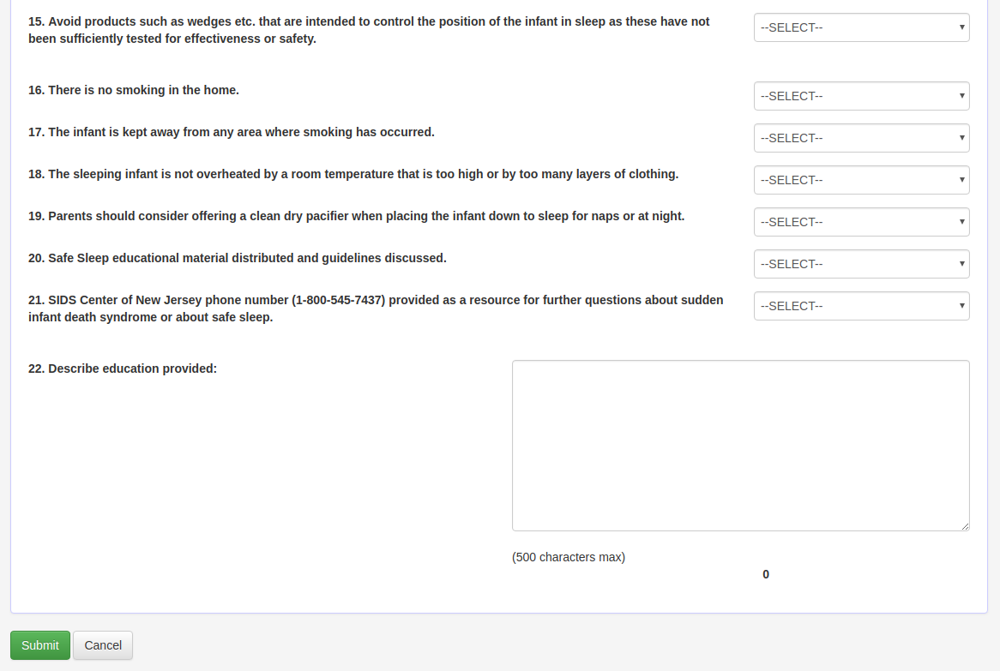
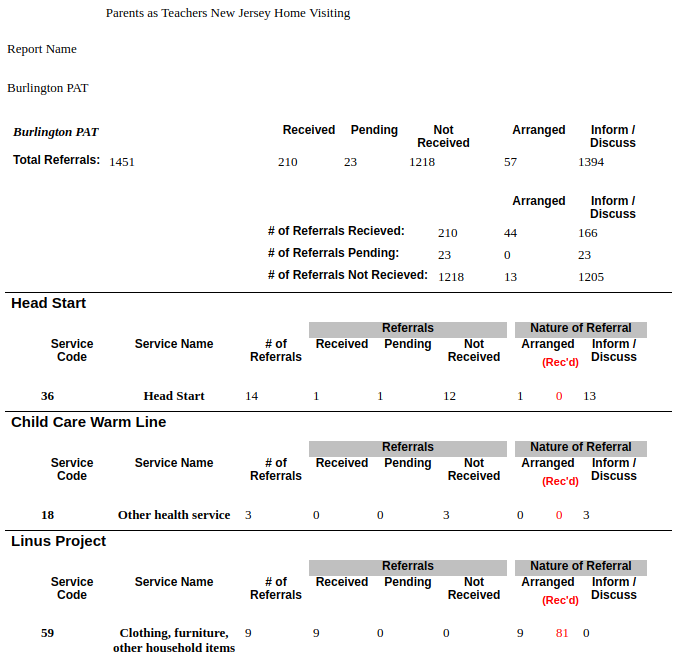

PATSys User Manual
Table of Contents
- 1. Information
- 2. Accessing the System
- 3. Participant Data Entry
- 3.1. Data Integrity
- 3.2. General Data Entry Tips
- 3.3. Basic Information
- 3.4. Forms
- 3.4.1. Using the Forms Section
- 3.4.2. Referral Form
- 3.4.3. Recruitment Log (Post Referral) & Creative Outreach Log
- 3.4.4. Identification and Contact Information
- 3.4.5. Service Referrals
- 3.4.6. Intake Form
- 3.4.7. EDPS Form
- 3.4.8. HITS Form
- 3.4.9. Safe Sleep Form
- 3.4.10. Level Form
- 3.4.11. LSP Form
- 3.4.12. Target Child Identification Information and Birth Outcomes
- 3.4.13. Follow-up Form
- 3.4.14. PC1 Medical Information
- 3.4.15. Home Visit Logs
- 3.4.16. Discharge
- 3.4.17. Critical Incident Report
- 3.4.18. Benefits Status Change
- 3.4.19. Child Health Records
- 3.4.20. Target Child Medical Information
- 3.4.21. Milestones
- 3.4.22. Infant/Toddler and Early Childhood HOME
- 3.4.23. ASQ and ASQ-SE Score Sheets
- 3.5. Medical Providers
- 3.6. Notes & Contact History
- 3.7. Family Goal Plans
- 4. New Client
- 5. Search Cases
- 6. Reports
- 6.1. Accessing Reports
- 6.2. Ticklers
- 6.3. Lists
- 6.3.1. Supervisor Case List
- 6.3.2. PE Case List
- 6.3.3. Worker Information List
- 6.3.4. Address Report to Excel
- 6.3.5. Service Referrals Arranged & Service Referrals Info/Discussion
- 6.3.6. Services By Agency
- 6.3.7. Count of Service Referrals by Code
- 6.3.8. Zip Code Report
- 6.3.9. Medical Provider Listing
- 6.3.10. Program Caseload Summary
- 6.3.11. Screen/Referral Source Summary
- 6.4. Served Cases
- 6.4.1. Served Cases
- 6.4.2. Served Cases - Families Served in Time Period
- 6.4.3. Served Cases - Families Served at Beginning
- 6.4.4. Served Cases - New Families Enrolled in Time Period
- 6.4.5. Served Cases - Families Discharged in Time Period
- 6.4.6. Served Cases - Families Active at End
- 6.4.7. Served Cases - TIP Participants
- 6.4.8. Served Cases - Level Information
- 6.5. Accreditation
- 6.5.1. Affiliate Performance Report
- 6.5.2. 4-2B. Home Visit Achievement Rate - Aggregate
- 6.5.3. 4-2B. Home Visit Achievement Rate - Detail
- 6.5.4. 4-3. 3 Years In Program
- 6.5.5. Target Child Immunization Report
- 6.5.6. Target Child Immunization Schedule
- 6.5.7. 7-2. Target Child Immunization Record
- 6.5.8. 7-2. Target Child Immunization Record Details
- 6.5.9. 7-2. Target Child Immunization Record Exclusion
- 6.5.10. 7-4B. Service Referrals Needing Follow-Up
- 6.5.11. 11-2A. Home Visit Observation by Supervisor
- 6.6. Analysis
- 7. Glossary
1 Information
1.1 Copyright
- This manual is ©2015 Prevent Child Abuse - New Jersey and was produced in the United States of America.
- All rights reserved. This manual or any portion thereof may not be reproduced or used in any manner whatsoever without the express written permission of Prevent Child Abuse - New Jersey or the following funders.
1.2 Funders
- This manual's production was made possible by the support of Prevent Child Abuse - New Jersey's funders:
- New Jersey Department of Human Services: Division of Family Development
- New Jersey Department of Children and Families: Division of Family and Community Partnerships
- New Jersey Department of Health
2 Accessing the System
2.1 Logging In
Figure 1: The PATSys Login Page
- Open your web browser. The database is optimized for Internet Explorer.
- Navigate your web browser to https://njpat.org.
- Enter your username and password and click the "Log In" button.
2.2 Home Page
Figure 2: The PATSys Home Page
- The home page can be accessed after logging in or clicking on the "Home" menu icon.
- At the home page, the following information can be found:
- NJ PAT Tips
- These tips include information about how to use the database effectively.
- News
- This section displays recent changes and updates on site. Clicking on "Archived News" link will take you to page on which all news reside. Clicking on displayed year links will open list of all news for selected year.
- Change Program/Role
- Here program and role of user can be changed.
2.3 Reporting Bugs
Figure 3: Example Server Error
- If a bug is found in the system, please send an email to the tech support email found on the home page. Include the following information in that email:
- The login used when the bug was encountered;
- The screen on which the bug was encountered;
- If an error page like the example image in this section appears, the text of that error message or a screenshot of the error message; and
- Any relevant information that could be used to reproduce the bug, such as the PC1 ID or any options selected on a report being run (such as start and end dates).
3 Participant Data Entry
3.1 Data Integrity
In its broadest use, “data integrity” refers to the accuracy and consistency of data and information stored in the PATSYs database. Entering accurate and timely data is vital in enabling us to produce accurate reports which can be analyzed to improve the quality of our home visitation program implementation. Both quantitative and qualitative data from the database will be evaluated on how best it can inform NJ’s CQI process and advance the field of home visitation. All data for the month should be entered by the 10th day of the following month. Please contact your PCANJ Program Specialist if you have any questions.
3.2 General Data Entry Tips
3.2.1 Health and Efficiency
- Learning to touch type (type without looking at the keyboard, using both hands) is an important skill for both data entry and, increasingly, everyday life.
- The same is true of ensuring that the proper posture for typing is used, which can help prevent repetitive stress injury.
- Taking breaks is important. While it's not commonly thought of as such, typing is a rapid, repetitive, and physical action for the hands and wrists. Like any other physical or mental activity, it is important to take short breaks, not only for increased productivity but also for long term health.
- In general, at least 10 minutes per hour should be spent not typing. Breaks will need to be set according to comfort level with prolonged data entry and the expectations of the work environment. One possible setup might be short breaks (~30 seconds) for stretching every 10 minutes and a 3-5 minute break to get up and walk around every 30 minutes.
- Proper computing working positions and habits are important components of data entry work that are beyond the scope of this manual. Please refer to the following links for more information:
- Touch typing is also beyond the scope of this guide, but a number of free resources are available online.
- As typing position for QWERTY keyboards has been standardized, it is important that to find a tutorial that is appealing in terms of both pace and aesthetics.
- Several examples as well as a Google search for more possibilities can be found below:
3.2.2 Keyboard Shortcuts
- When entering data, several keyboard shortcuts can make the process easier and more ergonomic (limiting the amount of time and motion switching between keyboard and mouse):
- Tab key
- The tab key is located to the leftmost side on most keyboards.
- It often has the word "Tab" or "tab" written on it, and may also have the tab character (↹).
- When entering forms, pressing the tab key will jump to the next field, checkbox, drop-down menu, link, or button.
- Pressing shift and tab at the same time will go back one input (the same function but backward).
- Space bar
- The space bar not only can be used for its normal purposes in entering text but also as a replacement for clicking.
- For instance, if the tab key or a mouse click is used to focus the selection on a checkbox, pressing space will select or unselect the checkbox.
- Space will also cause drop down menus to expand and can be used to select an item from a dropped down menu.
- Alphanumeric keys (A-Z, 0-9)
- Beyond their normal use in text entry, these keys can be used as shortcuts for select menus.
- In order to use the shortcuts in this way, the drop down select item must be already focused either by using the tab key or clicking on it.
- Then, the first letter or number of an item can be pressed in order to quickly select it.
- For instance, if a select menu contains the options "True", "False", and "Unknown", pressing the "T", "F", and "U" keys (respectively) will select the items.
- As another example, if a menu contained the options "1. True", "2. False", and "3. Unknown", pressing the "1", "2", and "3" keys (respectively) will select the items.
- In cases where there are multiple items starting with the same character, several options are available (in the following examples, the items will be "Health", "Help", and "Hope":
- If the subsequent letters of the item are typed out quickly, the item will be selected. (In the example, typing "hel" will select "help", "ho" will select "Hope").
- If the same letter is pressed multiple times, the next items will be selected. (Ex: pressing "h" once will select "health", twice will select "help", and three times will select "hope")
- Finally, pressing the up and down arrows is a slow but certain way to cycle through lists.
- Enter/return key
- In many online forms and some of the forms in the database, pressing the enter key when not in a larger text entry field will submit the form.
- This can be problematic if enter is unintentionally pressed while a form is incomplete or data needs to be corrected.
- Backspace
- Like the enter key, this key can often cause problems with unintended behavior.
- The backspace key (or delete key on some Macintosh keyboards) is commonly used to correct mistakes.
- However, in web browsers, the backspace key is also often a shortcut key for "back". If it is pressed while something other than a text field is selected, it will send the user back, often deleting any changes made in the form.
- If that does occur, the ideal response is to click the next button on the web browser rather than clicking the link that initially opened the form.
- If next is pressed, form data will often be retained, but it will never be saved if the link or button is clicked again instead.
- Tab key
- Keyboard Shortcuts Summary:
- Tab
- Move focus to the next item
- Shift+tab
- Move focus to the previous item
- Space
- Action or click key for the focused item
- Alphanumeric keys
- Useful shortcuts to quickly select drop-down items
- Enter key
- Should be avoided unless in a large text field, as it may submit the form
- Backspace key
- Should be avoided except when used in text entry, as it will cause the browser to go back. If this occurs, use the next button not the original link to return to the form.
3.2.3 Person Profile
- Person Profile Search
Figure 4: Person Profile Search
- These search forms can vary, depending on the section of the database, but they all share common characteristics.
- The initial search typically asks for the person's first name, last name, date of birth, and phone number.
- Other characteristics may be included as well.
- When searching, each field is included in the search. For example, a search for somebody with the first name Annie and last name Smith would return both "Annie West" and "John Smith".
- When results are returned, they are usually selectable and will assign the found person to the role that is being searched for or open the associated case.
- The option to create a new profile will usually be present, and after the creation of the new profile using the person profile form, that new person will be assigned to whatever role is being searched.
- If a new form is opened, the items entered into the form will sometimes be locked in, so it is a good idea to actually enter names and other information correctly when intending to create a new person.
- These search forms can vary, depending on the section of the database, but they all share common characteristics.
- Person Profile Form
Figure 5: Person Profile Creation Form
- Person profiles are generally created in three cases: when assigning PC1 (generally done at a new case) or PC2, OBP, and Emergency Contact (generally done when filling out contact information).
- These forms have a standard set of inputs including first name, middle initial, last name, date of birth, race and ethnicity, address, phone numers, and social security number.
- In general, it is important to fill these fields out as correctly as possible, but they can be corrected later using the Identification and Contact Information form.
- With both race and gender (as with later fields like income or educational achievement), the entered data should be based on the participant's self-identification.
- Social security number is not a required field for collection.
- Person profiles are generally created in three cases: when assigning PC1 (generally done at a new case) or PC2, OBP, and Emergency Contact (generally done when filling out contact information).
3.2.4 Race and ethnicity
Figure 6: Race and Ethnicity Selection
- When entering race and ethnicity, it is important to note that the race field is separate from the question as to whether a participant identifies as hispanic.
- In the system, ethnicity only refers to whether a person is hispanic or not.
- Race is the category for all other racial or ethnic categories that person self-identifies as.
3.2.5 Health Insurance
Figure 7: Health Insurance Selection with Medicaid Selected
- Health insurance and Medicaid information is captured in a number of forms, as early as the referral.
- If PC1 is indicated as receiving Medicaid, the option to select the Medicaid type will be present. Currently the types available are:
- MC
- Managed Care, which means the family is enrolled in a particular managed care organization on a subscription basis, which helps the state manage costs.
- FFS
- Fee-for-service, which means Medicaid pays when each individual service is rendered, much like employee based PPO insurance.
- PE
- Presumptive eligibility, which allows children to get access to Medicaid or CHIP services without having to wait for their application to be fully processed.
- If Medicaid is selected, a Medicaid HMO will be selectable.
Figure 8: Health Insurance Selection with No Medicaid Selected
- If receiving Medicaid is set to "No" or "Unknown", the health insurance selection will appear, which is a series of checkboxes. Multiple options may be selected.
3.2.6 Unknown Information
Figure 9: True, False, and Unknown Selection
- When entering values into true, false, or unknown drop downs or any other field that allows for unknown values, it is important to not skip items.
- If an answer is unknown, by recording that information as unknown, it makes it clear that the field was not accidentally skipped.
- Learning that some types of information are consistently difficult to obtain can be useful for researchers, funders, and Prevent Child Abuse - New Jersey.
- In many cases, values can be updated later, or in the case of Follow-Up and Benefits Status Change Forms, the new information can be entered as it is obtained or when the next form is scheduled.
3.3 Basic Information
Figure 10: Basic Information Form
3.3.1 Purpose
- This particular form is one of the most useful in the system, allowing supervisors to review basic information about the family, including case ID, the referral date, target child date of birth, the current level, the assigned home visitor, the intake date, the termination date, whether a PRA was received, and the names and numbers of the relevant people involved.
- It provides access to changing some values that cannot be changed elsewhere, such as the target child's date of birth, the referral form date, and the current home visitor.
3.3.2 Form
- Immediately after clicking edit information, the display becomes an editable form.
- That form can be used to update the referral date, target child date of birth, intake date, and whether the participant received the PRA.
- Use the submit and cancel button to operate the form.
3.3.3 Links
- All of the green text items are links that will allow for the editing of various participant characteristics.
- The PC1, emergency contact, and other biological parent links lead to a person profile search (if none is currently entered) or person profile form. The data inputted into that form or search will be applied to the case.
- The level link will lead to the case's level form.
- The current PE link leads to a form that allows for the participant's assigned Parent Educator to be changed.
3.4 Forms
Figure 11: Forms
3.4.1 Using the Forms Section
- Generally, each form is saved by completing it and pressing the "Submit" button.
- Once saved, most forms can be edited. However, especially with early forms, some information will need to be changed in the Basic Information section. In general, it is useful to know that information can be edited, but paying attention to accurate data entry the first time around is important.
- At the top of most forms, the option is present to change the home visitor associated with the form. That option can be used when one home visitor is filling in for another. To change the home visitor associated with the family, the Basic Information section must be used.
3.4.2 Referral Form
Figure 15: Referral Form
- While many of the fields in this form are straightforward, it is important to take special care when entering information here and in the other early forms.
- If the referral is saved as a negative or #48 is not completed and the form is saved, the program will need to re-enter the referral with a new participant. This information cannot be changed.
- For instance, the "Date of Referral" field, which is the first field on the form and influences much of the later data entry, including PE selection, is often ignored because it does not have a number.
- Another important field to make sure is correct is the target child date of birth, especially since that date ties into so many of services delivered and metrics tracked (including immunizations, ASQs, and Follow-up Forms).
- If the final select box that asks which home visitor is assigned to the family does not have the expected home visitor in it (or is empty), check the first input "Date of Referral". The database populates the home visitor menu based on that initial field. If the correct date is entered but the home visitor is still not present, consult a supervisor to ensure the home visitor is correctly entered into the system as being active at the time of referral.
- When selecting the name of the referral source, check to see if the referral source you're looking for is already in the list.
- On occasion, the source will exist in the list with a different spelling or abbreviation.
- If you believe that a field in this list is spelled incorrectly or a duplicate of another entry, please inform your supervisor.
- To change the referral date or TC DOB go to the basic information page.
3.4.3 Recruitment Log (Post Referral) & Creative Outreach Log
Figure 16: Recruitment Log
- These two forms share a number of similarities and a similar goal: they are used to track outreach to families while the families are not being actively visited.
- Creative outreach logs are only available when the family has been listed as on the inactive level in the level form at some point in their history with the program.
- When adding a new log, the month entered must be entered in the form MM/YYYY (for example, January 2015 is 01/2015).
Figure 18: Activity Form
- When entering information into these forms, it is only necessary to fill out fields where at least one recruitment effort was actually made. Fields that would otherwise be entered as "0" can be left blank.
- In the case of recruitment logs, the case status field must be filled out. The three options all have an effect on the subsequent data entry:
- 1. Engagement Efforts Continue
- the remaining option makes the intake form available.
- 2. Parent Enrolls/Accepts Services
- indicates that another form of the same type should be filed.
- 3. Engagement Efforts Terminated
- terminates the case.
- The recruitment log form is the one used to assign the primary home visitor for this case, though home visitors can be reassigned on the basic information page.
- In the case of creative outreach forms, the comments/narratives section should fill the same role, and explain what activities are planned in the next month in addition to any pertinent information about the outreach.
3.4.4 Identification and Contact Information
Figure 20: Identification and Contact Information
- This form is used to update the relevant person profiles for the PC1, PC2, OBP, and Emergency Contact Person.
- In order edit the person profiles, click on a link that says either Assign or Edit [Role] after a pencil logo. Clicking on that link will open a person profile form.
- The Identification and Contact Information form also serves another important purpose; it is where initial enrollment information is recorded.
- If the final items on this form (Signed confidentiality information, target child DOB, and the number of children born if postnatal) are not filled out, the Intake Form will not be available.
3.4.5 Service Referrals

Figure 21: Service Referral Form Selection
- To add a new service referral, click the "+ New Referral" button and enter the date in MM/DD/YY format in the popup window before clicking "Add New".
- In order to edit an existing service referral, click the date of the referral.
- Use the "Delete" button to delete service referrals.
Figure 22: Service Referral Form
- When entering service codes, use the codes provided on the paper forms (you can select the code quickly by selecting the drop down menu and typing the number of the code).
- When entering service referral information, if it is still unknown whether a participant has actually received services from the recommended, select the blank option rather than "yes" or "no".
3.4.6 Intake Form

Figure 27: Intake Form
- This form carries over much of the demographic information already captured on referral.
- With referrals, it is expected that many pieces of information are unknown, and intake is an opportunity to increase knowledge and information about the client.
- Intake information is collected at the first home visit.
- Especially for new home visitors, bringing a paper copy of the intake forms to the first visit can be helpful.
3.4.7 EDPS Form
Figure 28: EDPS Form
- The EDPS form should be used to record all responses to the Edinburgh Postnatal Depression Scale screening.
- Multiple forms can be entered, each with different dates.
- Each question should be filled in based on the responses of the mother.
- The EDPS score is updated automatically based on the responses as they are entered.
- If the score reaches 10 or greater, then the system will prompt "Possible Depression. Referral Required." If you do not currently know the appropriate service provider for postnatal depression treatment, consult your supervisor.
3.4.8 HITS Form
Figure 29: HITS Form
- The HITS form should be used to enter all HITS Screening Tool for Domestic Violence results.
- Multiple forms can be entered, each with different dates.
- Each question should be filled in based on the responses of PC1.
- The HITS score is updated automatically based on the responses as they are entered.
- If the score reaches 10 or greater, then the system will prompt "Domestic Violence Risk. Referral Required." If you do not currently know the appropriate service provider for domestic violence issues, consult your supervisor.
3.4.9 Safe Sleep Form


Figure 31: Safe Sleep Form
- The Safe Sleep form should be used to enter all results from infant sleep safety screenings.
- Multiple forms can be entered, each with different dates.
- Each question should be filled in based on the responses of the caregiver.
- At the end of the form, enter any information that you provided to the caregiver.
3.4.10 Level Form
Figure 32: Level Form
- The level form allows for the family's level of visit intensity to be changed.
- The new level must always be different than the prior level.
- Only the most recent level change can be edited and no level changes can be deleted.
- As such, if a level change is mistakenly entered, the prior change will no longer be editable, and a change will be added that cannot be removed.
- If a level change is mistakenly added, inform your supervisor and include the PC1 ID for the case and the incorrect level.
3.4.11 LSP Form
Figure 33: LSP Form
- The LSP form section should be used to record LSPs as they are completed.
- The LSP Form section has columns for PC1, OBP, and PC2 LSPs.
- Each row has the expected date for the LSPs.
- In order to input an LSP, enter the date of completion in the appropriate row and and then add under the category.
- As values are entered into the form, whether or not they are in window will be automatically calculated.
3.4.12 Target Child Identification Information and Birth Outcomes

- This section's initial page is a selection page, where the desired TC's form can be selected. In most cases, there will only be one such selection, but when there are twins who are both being served, both TCs will be available.
- Access the form by clicking on the TC's name.
- This form is another useful form to print out (from the Paper Forms section) and bring to the relevant home visit (either the first one if postnatal or one of the visits after the target child is born).
- This form must be filled out in order to indicate that the target child has been born and enable the forms in the post target child ID section.
- Upon entering this form, the level of the case will automatically be set to weekly.
3.4.13 Follow-up Form
Figure 38: Follow-up Form
- Follow-up forms must be filled out every six months based on the target child's date of birth.
- If the form is filled out too early or too late (30 days from the target date in either direction), it will be marked as out of window, which will mean that the data in that form cannot be used for reporting purposes. These forms should still be entered, but entering them on time is a priority.
- The paper follow-up forms should be brought to several home visits preceding the due date, as there is a good amount of information, but the questions can be spaced out over several weeks.
- When entering the information in these forms, the sections follow the order of the paper forms:
- After completing the first section, PC1 Employment and Education, move on to the next section (PC1 Issues), by clicking on the "Issues" link on the left side of the form.
- After completing that section and the "Services" and "Pregnancies" sections, move on to the TC, OBP, PC2, and Family sections on the left. (OBP and PC2 will only be available if that role is entered in the Identification and Contact Information section).
3.4.14 PC1 Medical Information
Figure 39: PC1 Medical Information
- Prenatal care visits should also be documented under the OB/GYN section.
- Unlike most of the other forms, this section is a collection of multiple editable forms, each of which is saved on entry.
- With the exception of the number of prenatal care checkups prior to enrollment, which can simply be submitted, new items for each category must be added by clicking "Add New" and entering the date and additional information in the popup window that appears.
- In order to edit existing records, click on the date of of visit. The popup that appears can be edited as with the new items, and the current item can also be deleted from that window.
3.4.15 Home Visit Logs
3.4.16 Discharge

Figure 40: Discharge Form
- In order to discharge a family in the system, enter the date of the discharge.
- A new form will appear, which includes a drop down menu with discharge reasons and a space for notes about the discharge.
- If a family is being transferred to another program, the discharge code must be set to "38 Transferred to Another PAT NJ Program".
- Once the discharge has been entered, the discharge form will appear whenever that section is selected from the menu.
- To reinstate a previously discharged family, click the "Reinstate" button, which will delete the existing discharge.
3.4.17 Critical Incident Report
Figure 43: Critical Incident Report
- When entering critical incident reports, please include as much detail as possible and continue to update the information as the situation progresses.
- It is important to include as much information that is known about all parties involved that is not already entered into the database.
- When looking at the situation, provide detail about what happened as well as what steps are being taken to provide support and assistance to the family.
- If outside referrals are made to agencies not listed on the form, include those in the text descriptions as well as in the Service Referral section.
- Unlike other forms, this form should be filed in collaboration with Prevent Child Abuse - New Jersey.
- After entering an initial draft of the critical incident form, the home visitor or supervisor should contact their program specialist, who will review the form and ask further questions.
- When filling out this form, it is important to leave the final section of the form blank for the PCA-NJ program specialist to fill out.
- Prevent Child Abuse - New Jersey will relay the pertinent information to the Department of Children and Families.
3.4.18 Benefits Status Change
Figure 44: Benefits Status Change
- This form should be filed every time a Follow-up Form is filed as well as whenever a participant informs the home visitor that their benefits have changed.
- As with the Follow-up Form, attempting to get this information in the weeks leading up to the six month due date for these forms can be helpful, especially as families may not have their benefits information immediately on hand the first time they are asked.
- Even if benefits have not changed since the last update, this form should still be filed every six months with the same information.
3.4.19 Child Health Records
Figure 45: Child Health Records
- This form must be completed within 90 days of enrollment or by 7 months of age if the child was enrolled prior to 4 months of age, and then completed annually thereafter. New information (such as well-child visits) should be added throughout the year to the current record.
- Form has four main sections:
- pregnancy history (including prenatal, labor and delivery, and postpartum),
- health review (including medical visits and conditions, dental, and safety),
- hearing review, and
- vision review.
- Information should be recorded for all items within each section. "None" can be entered for any concerns or abnormalities that don't apply.
- For programs that collaborate with another agency or with multiple resources for hearing or vision screenings, it is crucial that a parent signs a release such as the Permission to Exchange Information.
3.4.20 Target Child Medical Information
Figure 46: Target Child Medical Information
- As with the PC1 Medical Information form, this page actually consists of a number of forms, each of which are saved upon entry.
- When entering immunization information, click the "Add New" button and enter the date in the popup box.
- To edit a saved entry, click on the date, and the same popup will appear, including a "Delete" button to remove incorrect entries.
- For immunizations, only check the "Is Delayed?" checkbox if the immunization was delayed for a medical reason (for instance, if the child was sick on that given day and the doctor recommended the delay).
- When entering Lead Screenings, be sure to collect the level information from the participant if possible. Participants may need to be reminded to ask their doctors or search their own records for that information.
- For emergency room, urgent care, and hospital stays, use the codes provided on the paper forms (you can select the code quickly by selecting the drop down menu and typing the number of the code).
3.4.21 Milestones
Figure 47: Milestones
- The milestones form are observations of child behavior at different stages of development.
- Form is divided in tabs that represent child development stages where TC is 5.5-8 months, 8-14 months, 14-24 months, 24-36 months, 3-4 years, 4-5 years and 5-6 years.
- Form has four main sections in each development stage tab:
- Language,
- Cognitive,
- Social-emotional, and
- Motor.
3.4.22 Infant/Toddler and Early Childhood HOME

Figure 48: HOME Form
- HOME score sheets are added by entering the date of the HOME Inventory in the appropriate column and clicking the "Add" button.
- Once a form is entered, the "Add" button will change to an "Edit" button, which can be used to alter completed forms.
- In addition to the aggregate scores for each subscale, the form asks for the ratings for specific metrics as well.
3.4.23 ASQ and ASQ-SE Score Sheets
Figure 49: ASQ Form
- ASQ and ASQ-3 score sheets are added by entering the date of the questionnaire in the appropriate column and clicking the "Add" button.
- Once a form is entered, the "Add" button will change to an "Edit" button, which can be used to alter completed forms.
- After entering the scores in the areas (for ASQ-3) and the total (for ASQ-SE), the system will automatically calculate whether the the score is above or below cutoff.
- If the results indicate possible developmental delays, whether or not the target child was referred should be recorded.
- If the target child was referred, a corresponding service referral form should be filled out.
- If the target child was not referred (for instance, because the the target child is already receiving services), the reason they were not referred should be recorded.
3.5 Medical Providers
Figure 50: Medical Providers
- This section of the case information displays the current medical providers for both PC1 and TC.
- This section can also be used to edit that information by clicking on the Edit Information link.
- When editing the information, try to enter the date that medical care was actually changed, not the date when the doctor was changed in the system.
3.6 Notes & Contact History

Figure 51: Notes & Comments
- This section of the case information displays list of all contacts made to PC1 and form for adding new one.
- Form for adding new contacts includes input date and Note/Comment text section which are required and without which is not possible to create new contact. There is also Contact Reason drop down menu which is optional. After filling up form, click on 'Click to Add' button to create new contact.
- Deleting contact can be achieved by clicking on 'Delete' button on desired contact from the list.
3.7 Family Goal Plans
Figure 52: Family Goal Plans
- This section of the case information displays goal plans set for the case. To see details about family goal you need to select one from 'Select Goal' dropdown menu. When choosing goal from dropdown menu, you can notice that goal status is displayed next to goal name. When goal is selected system will automatically load details about that goal.
- Details that are displayed about selected goal are:
- Goal statement (number of statement/s)
- Goal Start Date
- Goal pertains to
- Goal Area
- Protective Factors
- Anticipated Achievement Date
- Current Goal Status
- Goal Sub-Area
- Date of Most Recent HV Log That Addressed This Goal
- Steps to Achieve Goal with following information (table view)
- Step Number
- Step Description
- Anticipated Achievement Date
- Achieved
- Goal Status History with following information (table view)
- Goal Status
- Goal Status Date
4 New Client
- Clicking on the new client menu opens a person profile search form.
- If one of the found profiles is chosen, it will be assigned as the primary caretaker in the new case.
- If the not found option (in this case, "Click here to create a new Person Profile and New Screen, if no match."), is chosen a new person profile can be created who will be assigned as PC1.
- Upon selecting or creating the person profile, the referral form for that case will be opened.
5 Search Cases
- Search cases opens a similar menu to New Screen, though it also includes search options for the assigned home visitor and Target Child information.
- This menu does not allow for the creation of a new case if the family is not found.
6 Reports
6.1 Accessing Reports
Figure 53: The Reports Main Screen
- From the PATSys Home Page, click the "Reports" menu item on the left side of the screen under the PAT logo.
- The reports are divided into five sections:
- Find the desired report in its section and click on it.
6.2 Ticklers
6.2.1 Family Time Line
Figure 54: Family Time Line
- Report Contents
- Cohort
- The report allows the user to select any of the families currently enrolled in the program.
- Information
- The Time Line provides a list of dates for required milestones for the selected family, including:
- Goal plans (IFSPs),
- Safety checklists,
- Immunization,
- Lead Screenings,
- Well-Baby visits,
- PAT Health Record (Initial Health & Vision Record),
- OAE screenings (Initial Hearing (OAE)),
- Period of PURPLE Crying Kit administration,
- ASQ-3 screenings,
- ASQ-SE screenings,
- HOME Inventory Screenings,
- LSP screenings,
- Follow Up Forms, and
- Benefits Status Change forms (BS Change).
- In addition to the primary report, the Family Time Line provides basic information about the family, including:
- The family's program,
- The family's names and PC1 ID,
- The Target Child's Date of Birth and gestational age at birth,
- The family's emergency contact info,
- The home visitor and supervisor's names,
- The family's referral and intake dates, and
- The date that the report was printed.
- The Time Line provides a list of dates for required milestones for the selected family, including:
- Cohort
- Instructions
- Select the PC1 ID from the drop down menu.
- Click the Run Report button.
- Tips and Tricks
- All ASQ-3 screenings that can be entered into the system are listed in the Family Time Line. This means that ASQ-3s that are not required for all families may be present on the Time Line. Please refer to the Home Visit Log Manual or the Policies and Procedures for more information on which ASQ-3s are required.
6.2.2 PE Enrolled Case Tickler Summaries
Figure 55: Combined Tickler Summary
- Report Contents
- Cohort
- This report includes all currently enrolled families in the program filtered by Supervisor.
- Information
- The report shows the screenings required for each family for the selected month, along with the date those screenings are expected to be filled out.
- The report also provides information about each family, including:
- PC1 name and ID;
- Target child name, birthdate, and gestational age;
- The family's visit level; and
- The worker and supervisor assigned to the family.
- Cohort
- Instructions
- Select the desired month from the drop down menu.
- The current and following month are the only two months available.
- Select either all supervisors listed or click the supervisor option and choose a supervisor from the drop down menu.
- Choose the report to run from the options.
- The combined option will include all of the other listed screenings.
- Click the Run Report button.
- Select the desired month from the drop down menu.
- Tips and Tricks
- Benefits Status Change Forms should be administered at the same time as Follow Up forms.
- These forms can be printed out (from the Paper Forms section) before the start of each month and distributed to Parent Educators or posted.
- Parent Educators should then cross off the required screenings as they complete them.
- If the Ticklers are posted, families' identifying information, such as name and DOB, should be redacted.
6.2.3 Referrals Not Yet Enrolled

Figure 56: Referrals Not Yet Enrolled Report
- Report Contents
- Cohort
- This report includes all families that are currently waiting for enrollment filtered by Supervisor.
- Information
- This report provides a table of information about families that are going to be enrolled assigned to each Parent Educator, including:
- Worker name,
- PC1 ID, and
- Referral date.
- The report also provides name for each supervisor.
- This report provides a table of information about families that are going to be enrolled assigned to each Parent Educator, including:
- Cohort
- Instructions
- Select all reports option or supervisor option and choose a supervisor from the drop down menu or parent educator option and choose a parent educator from dropdown menu.
- Click the Run Report button.
- Tips and Tricks
- Use this report to access current caseloads that are waiting for intake.
6.3 Lists
6.3.1 Supervisor Case List
Figure 57: Example Supervisor Case List Report
- Report Contents
- Cohort
- This report includes all currently enrolled families in the program filtered by Supervisor.
- Information
- This report provides a table of information about the currently enrolled families assigned to each Parent Educator, including:
- Worker name,
- Number of cases (families that the home visitor is serving), and
- The number of cases per level.
- The report also provides the aggregated totals for each supervisor.
- This report provides a table of information about the currently enrolled families assigned to each Parent Educator, including:
- Cohort
- Instructions
- Select either all supervisors or click the supervisor option and choose a supervisor from the drop down menu.
- Click the Run Report button.
- Tips and Tricks
- Use this report to assess the current caseloads of home visitors.
- Home visitors with a lower number of frequently visited families should be first in line when either assigning new referrals or additional duties, such as planning group connections or performing community outreach.
- This report should also be consulted when considering transferring cases from exiting home visitors.
- Use this report to assess the current caseloads of home visitors.
6.3.2 PE Case List
Figure 58: PE Case List
- Report Contents
- Cohort
- This report includes all currently enrolled families in the program filtered by Parent Educator.
- Information
- This report contains information about the selected home visitors, including:
- Name and Supervisor's name,
- Number of enrolled cases and pre-intake cases (referrals that have not yet led to intake), and
- Caseload Case Weight Total.
- The report also contains information for each of the selected home visitors' families including:
- The following information about Primary Caretaker 1:
- Participant ID,
- Address,
- Phone number, and
- Emergency contact number.
- The following information about the Target Child:
- Name and
- Date of Birth.
- The following information about the case:
- The following information about Primary Caretaker 1:
- This report contains information about the selected home visitors, including:
- Cohort
- Instructions
- Select either "All" or click either the supervisor or worker option and choose a supervisor or worker from the drop down menu.
- Click the Run Report button.
- Tips and Tricks
- Home visitors can use this report to keep track of their families.
- If this report is printed out, please ensure that it is kept in a safe place due to the sensitive information that it contains.
6.3.3 Worker Information List
Figure 59: Worker Information List
6.3.4 Address Report to Excel
Figure 60: Address Report to Excel
- Report Contents
- Cohort
- This report includes all currently referred and enrolled non-discharged families in the program sorted alphabetically by PC1 first name.
- Information
- The report creates a spreadsheet file that includes the following information about each family:
- The Primary Caretaker 1's name and ID,
- The family's full address,
- The Target Child's date of birth or expected date of birth,
- The referral date,
- The intake date,
- The current level, and
- The worker assigned to the family.
- The report creates a spreadsheet file that includes the following information about each family:
- Cohort
- Instructions
- Click the Run Report button.
- The generated file should be downloaded automatically.
- Open the file in Excel.
- Tips and Tricks
- If the report does not display correctly in your spreadsheet program (for instance, if you are using a Mac without Excel), change the filename from MailingLabels.xls to MailingLabels.htm, and the file will open properly in a web browser.
- This report essentially creates a directory of families, which can be used to assign families to appropriate home visitors on intake and to plan group events based on the location of families.
- This report is especially useful in compiling a list of open referrals.
- For more information on sorting the results in Excel, please see the Demographics Report section.
6.3.5 Service Referrals Arranged & Service Referrals Info/Discussion
Figure 61: Service Referrals Arranged
Figure 62: Service Referrals Info/Discussion
- Report Contents
- Cohort
- This report displays all of the service referrals with referral dates between the start and end dates of the report (inclusive).
- Information
- This report displays information about all of the service referrals made during the time period.
- The information is aggregated by both the type of service and the total services received.
- The following information is shown for each group:
- The total number of services arranged (and the percentage of total service referrals if it is a subgroup),
- The total number of services that have been received (or started),
- The number of referrals pending service, and
- The number of services not received.
- If services were not received, the report also provides a breakdown of the services not received and the percentage of total referrals represented by that group.
- That breakdown includes the reason, the number of families in that reason, and the percentage of the total services not received.
- The final page of the report also contains a tally of all of the entries in the report.
- Cohort
- Instructions
- Enter a start and end date for the report.
- Click the Run Report button.
- Tips and Tricks
- Use this report to ensure that service referrals are successful and followed up on.
- If a large number of services are not received for the reason "Other", speak with the home visitors to try to understand what patterns may be causing difficulties.
- Track and monitor service referrals regularly.
6.3.6 Services By Agency

Figure 63: Services By Agency
- Report Contents
- Cohort
- This report includes the service referrals made in the report time period.
- Information
- This report displays information about all of the service referrals made during the time period.
- Report begins with tally of all of the entries in the report and aggregated information about them.
- Rest of the report contains referrals that are aggregated by the agencies providing the service, with detailed information about service referral.
- Cohort
- Instructions
- Enter a start and end date for the report.
- Click the Run Report button.
- Tips and Tricks
- This report provides detailed information about all service referrals together and on each referral individually.
6.3.7 Count of Service Referrals by Code
Figure 64: Service Referrals by Code
- Report Contents
- Cohort
- This report includes the service referrals made in the report time period filtered by Supervisor.
- Information
- This report displays information about all of the service referrals made during the time period.
- The referrals are aggregated by the type of service and subtype (or "Service Code").
- The final page of the report also contains a tally of all of the entries in the report.
- Cohort
- Instructions
- Enter a start and end date for the report.
- Select either all supervisors or click the supervisor option and choose a supervisor from the drop down menu.
- Click the Run Report button.
- Tips and Tricks
- This report provides more detailed information about the types of referrals being provided than the previous two reports.
- This report can be useful for determining what the service needs are in the county as well as what service referrals home visitors are comfortable providing.
6.3.8 Zip Code Report

Figure 65: Zip Code Report
- Report Contents
- Cohort
- This report includes all screened cases where the referral occurred between the start and end dates (inclusive) or the intake occurred by the end date of the report. Cases with discharge dates before the start of the report are not included.
- Information
- This report aggregates families by Zip Code and contains the following information per ZIP Code (and those with unknown ZIP Codes):
- The number of families who were screened in that time period,
- The percentage of total families screened represented by families in that ZIP Code,
- The number of families who were served in that time period, and
- The percentage of total families served represented by families in that ZIP Code.
- This report aggregates families by Zip Code and contains the following information per ZIP Code (and those with unknown ZIP Codes):
- Cohort
- Instructions
- Enter a start and end date for the report.
- Click the Run Report button.
- Tips and Tricks
- This report can help give a good sense of where participants are located in the county, which can be used to make decisions about where to hold group connections and where to extend the program's network of referral sources.
6.3.9 Medical Provider Listing
Figure 66: Medical Provider Listing
- Report Contents
- Cohort
- This report includes all enrolled families during the time period.
- Information
- This report provides medical provider information for both the Primary Caretaker 1 and the Target Child including:
- The PC1 ID,
- The medical provider or an indication if none is listed,
- The medical facility or an indication if none is listed, and
- In each case, the form where the provider or facility is listed.
- This report provides medical provider information for both the Primary Caretaker 1 and the Target Child including:
- Cohort
- Instructions
- Enter a start and end date for the report.
- Select either all supervisors or click the supervisor option and choose a supervisor from the drop down menu.
- Click the Run Report button.
- Tips and Tricks
- Use this report to check to ensure that all participants in the program's medical information is being properly tracked.
- Whenever possible, ensure that both the first and last names of medical providers are listed.
6.3.10 Program Caseload Summary

Figure 67: Program Caseload Summary
- Report Contents
- Cohort
- This report includes all families who have an intake date on or before the report date who have not been discharged by that date.
- Information
- This report provides a summary of the levels of participants assigned to each worker, including:
- The number of cases being served,
- The total case weight, and
- The number of families at each level.
- The end of the report includes the totals of each category for the entire program.
- This report provides a summary of the levels of participants assigned to each worker, including:
- Cohort
- Instructions
- Enter a date for the report.
- Click the Run Report button.
- Enter a date for the report.
- Tips and Tricks
- Use this report to obtain a summary of all of the families assigned to workers and their current levels (as well as the case weight for each worker).
- This report can also be used to monitor case weight when assigning new cases.
6.3.11 Screen/Referral Source Summary
Figure 68: Screen/Referral Source Summary
- Report Contents
- Cohort
- This report includes all referrals between the start and end dates (inclusive).
- Information
- This report provides a table of information about the referred families sorted by referral source, including:
- Referral source name,
- Number of referrals (listed as "screens"),
- Breakdown of referrals by prenatal, postnatal within two weeks of birth, and postnatal after two weeks of birth, and
- A final breakdown of screens by positive and negative (a Healthy Families metric that is not relevant for PAT programs).
- The report also provides the aggregated totals for the program, and each breakdown shows the percentage of families in each category per referral source.
- This report provides a table of information about the referred families sorted by referral source, including:
- Cohort
- Instructions
- Enter a start and end date for the report.
- Click the Run Report button.
- Tips and Tricks
- Use this report to determine which referral sources are providing the most referrals for your program.
- This report can also be used to determine which sources are providing better ratios of prenatal and postnatal referrals.
6.4 Served Cases
6.4.1 Served Cases
- Report Contents
- Cohort
- This report includes all cases with intake dates before or on the end date of the report who were not discharged before the start date of the report. Transferred cases are not included unless they were transferred by the end date of the report.
- Information
- The report contains aggregate information for cohort during the selected time period separated by page.
Figure 69: Served Cases Page 1
- Page 1 includes the following information:
- New families in the time period
- This section includes new referrals
- Grouped by total, prenatal, and postnatal
- Families served during the time period,
- Grouped by total, prenatal, postnatal but pregnant with a subsequent child, and non-pregnant (postnatal)
- Families served at beginning of time period (active at the start of the report),
- New families enrolled (intaked) in the time period,
- Grouped by total, prenatal, and postnatal
- Families discharged in time period,
- Families active at the end of the time period,
- Grouped by total, prenatal (at the end of the time period), and postnatal
- New families in the time period
Figure 70: Served Cases Page 2
- Page 2 includes the following information:
- Parents receiving benefits from the state, as well as their relative percentage compared to the total number of families served in the time period.
- Grouped by TANF, Emergency Assistance, GA, WIC, Food Stamps, SSI, and all families receiving at least one benefit
- Number of families active at end grouped by level,
- Length of service at discharge,
- This section is incorrectly labeled, as it shows the age of the Target Child at the time of discharge.
- Grouped by those discharged while prenatal; before six months old; and before one, two, or three years old.
- Parents receiving benefits from the state, as well as their relative percentage compared to the total number of families served in the time period.
Figure 71: Served Cases Page 3
Figure 72: Served Cases Page 4
- Page 3 and 4 includes the following information:
- Families who were discharged during the time period grouped by the listed discharge reason.
- Cohort
- Instructions
- Enter a start and end date for the report.
- Click the Run Report button.
- Tips and Tricks
- This report can be used as a comprehensive overview of intaked and discharged families during the time period selected.
- This report is a good way to get a sense of several of the key areas of the program's performance.
- When reading this report, consider asking the following questions:
- Is the program attracting a sufficient number of new prenatal referrals and intakes?
- Are the program's intakes keeping pace with discharges?
- If a relatively large number of families are being discharged in the given time period, what trends in terms of TC age and discharge reason can help to increase retention?
- Are a sufficient number of families receiving appropriate assistance (this is especially important with regard to WIC)?
- If the assistance numbers are lower than expected, are workers entering all of the families' information into the database?
6.4.2 Served Cases - Families Served in Time Period
- Report Contents
- Cohort
- This report includes all families who had intake dates before or on the end date of the report, were not discharged by the end date of the report, and had case start dates earlier than the end date (so cases transferred from other sites do not appear unless they were transferred before the end date).
- Information
- This report displays a table of all the families served during the selected date range.
- The table includes the following information about the families:
- PC1 ID,
- PC1 name,
- The date of birth or expected date of birth of the target child,
- Intake date,
- Discharge date, and
- The date of birth of any subsequent pregnancies.
- The families are grouped by pregnant (prenatal) women served, women pregnant with subsequent children, and non-pregnant (postnatal) women.
- The final page of the report also contains a tally of all of the entries in the report.
- Cohort
- Instructions
- Enter a start and end date for the report.
- Click the Run Report button.
- Tips and Tricks
- This serves as a quick overview of the families served during the time period.
- For those families with subsequent pregnancies, the second child's birthdate can be used to determine what supplemental materials to bring for the parent.
6.4.3 Served Cases - Families Served at Beginning
Figure 74: Served Cases - Families Served at Beginning
- Report Contents
- Cohort
- This report includes all families with intake dates before the start date of the start date of the report and either no discharge date or a discharge date after the start date of the report.
- Information
- This report displays a table of all the families currently enrolled at the start date.
- The table includes the following information about the families:
- PC1 ID,
- PC1 name,
- The date of birth or expected date of birth of the target child, and
- Intake date.
- The final page of the report also contains a tally of all of the entries in the report.
- Cohort
- Instructions
- Enter a start and end date for the report.
- Click the Run Report button.
- Tips and Tricks
- This is a good report to use to get a list of the families being served at any particular date.
- Make sure you set the desired date in the Start Date field, not the End Date.
6.4.4 Served Cases - New Families Enrolled in Time Period
- Report Contents
- Cohort
- This report includes all families with an intake date between the report's start date and end date, inclusive.
- Information
- This report displays a table of all the families enrolled during the selected date range.
- The table includes the following information about the families:
- PC1 ID,
- PC1 name,
- The date of birth or expected date of birth of the target child,
- Intake date, and
- Discharged date.
- The families are grouped by families enrolled prenatally and postnatally.
- The final page of the report also contains a tally of all of the entries in the report.
- Cohort
- Instructions
- Enter a start and end date for the report.
- Click the Run Report button.
- Tips and Tricks
- This report provides information about families enrolled in a given time period, which can be useful for both assessing program performance and aiding in retention.
- This report can be used for monthly anniversary celebrations (reaching out to families on their yearly anniversaries, for instance).
- This report can also be used to check in on families in the first couple of months of their enrollment to establish a strong rapport and connection with the program early on.
6.4.5 Served Cases - Families Discharged in Time Period
- Report Contents
- Cohort
- This report includes all cases discharged between the report start and end dates (inclusive). Transferred cases are not included unless they were transferred on or before the end date.
- Information
- This report displays a table of all the families discharged during the selected date range.
- The table includes the following information about the families:
- The final page of the report also contains a tally of all of the entries in the report.
- Cohort
- Instructions
- Enter a start and end date for the report.
- Click the Run Report button.
- Tips and Tricks
- This report is useful when attempting to monitor and improve program retention.
- All three factors shown (the reason, TC's age, and months family enrolled) are useful in terms of looking for patterns with discharged families.
6.4.6 Served Cases - Families Active at End
Figure 77: Served Cases - Families Active at End
- Report Contents
- Cohort
- This report includes all families with intake dates on or before the last day of the selected date range who have not been discharged or have discharge dates after that date.
- Information
- This report displays a table of all the families active on the last day of the selected date range.
- The table includes the following information about the families:
- PC1 ID,
- PC1 name,
- The date of birth or expected date of birth of the target child, and
- Intake date.
- The final page of the report also contains a tally of all of the entries in the report.
- The families are grouped by pregnant (prenatal) women served, non-pregnant (postnatal) women, and women pregnant with subsequent children.
- Cohort
- Instructions
- Enter a start and end date for the report.
- Click the Run Report button.
- Tips and Tricks
- This is a good report to use to get a list of the families being served at any particular date ordered by prenatal, postnatal, and subsequent pregnancy status.
- Make sure you set the desired date in the End Date field, not the Start Date.
6.4.7 Served Cases - TIP Participants
Figure 78: Served Cases - TIP Participants
- Report Contents
- Cohort
- This report includes all cases with intake dates before or on the end date of the report who were not discharged before the start date of the report. Transferred cases are not included unless they were transferred by the end date of the report.
- Information
- This report displays a table of all the families served during the selected date range.
- The table includes the following information about the families:
- PC1 ID;
- PC1 name;
- The date that the form listing benefits that this report uses was entered into the system;
- Whether or not the family was a recipient of TANF, EA, GA, WIC, FS (Food Stamps), or SSI; and
- 1 means that the family was a recipient, 0 means they were not.
- The total number of recorded services received by the family.
- The final page of the report also contains a tally of the following information:
- All of the entries in the report,
- All of the families receiving at least one benefit,
- All of the families receiving no benefits, and
- All of the families receiving each particular benefit.
- Cohort
- Instructions
- Enter a start and end date for the report.
- Click the Run Report button.
- Tips and Tricks
- Use this report to determine the level of enrollment in various forms of assistance for the families enrolled in your program.
- This report pulls from either the intake form or benefits status change forms, depending on the age of the target child.
6.4.8 Served Cases - Level Information
Figure 79: Served Cases - Level Information
- Report Contents
- Cohort
- This report includes all cases with intake dates on or before the end date of the report and not discharged by the end date of the report. Transferred cases are not included unless they were transferred on or before the end date.
- Information
- This report displays a table of all the families served during the selected date range.
- The table includes the following information about the families:
- PC1 ID,
- PC1 name,
- The date of birth or expected date of birth of the target child,
- The family's intake date,
- The date the current level was assigned, and
- The days that the family has been on their current level.
- The families are sorted by their current level (inactive, weekly, monthly, or twice monthly).
- Each section has a number indicating the number of entries in that section.
- The final page of the report also contains a tally of all of the entries in the report.
- Cohort
- Instructions
- Enter a start and end date for the report.
- Click the Run Report button.
- Tips and Tricks
- This report can be used to determine whether families are assigned to the appropriate levels.
- To determine the appropriate levels for families, please consult the levels guidelines in the Policies and Procedures.
6.5 Accreditation
- All of these reports were created to satisfy requirements for Healthy Families Accreditation but are still often useful for PAT programs.
6.5.1 Affiliate Performance Report
- Report Contents
- Cohort
- This report includes aggregate data about affiliate performance during the selected time period (inclusive).
- Information
- This report contains aggregate information for cohort during time period divided in sections. From Service Delivery section onwards aggregate information is displayed. In each row there are two columns separating cases that are enrolled during and before report period, each column contains total number of cases involved and + sign at the end of the row, which when clicked open's a list of cases.
Figure 82: Affiliate Performance Report
- Aggregate information is divided in following sections:
- I. Organizational Design
- Infrastructure
- Leadership and Administration
- Staffing
- Supervision
- II. Service Delivery
- Families
- Children
- Prenatal
- II. Service Delivery
- III. Family-Centered Assessment and Goal Setting
- IV. Personal visits
- V. Group connections
- VI. Screening
- VII. Resource Network
- VIII. Quality Assurance and Evaluation
- IX. Waiting List Families
- X. Family Retention
- XI. Program Information, Funding & Budget
- Public Funding-State
- Public Funding-Local
- Private Funding Sources
- XII. Outcomes Reporting is divided in following categories:
- Category One: Parenting Skills, Practices and Capacity
- Category Two: Additional Outcome
- XIII. Submit/Resubmit
- I. Organizational Design
- Cohort
- Instructions
- Enter a start date and end date for the report.
- Click the Run Report button.
- Tips and Tricks
- This report can be used to track the program staff and their working process during the selected time period.
6.5.2 4-2B. Home Visit Achievement Rate - Aggregate
- Report Contents
- Cohort
- The cohort for this report is participants who were receiving service during the date range of the report.
- Information
- This report shows the breakdown of home visits for the workers selected when running the report.
- The report includes aggregate counts for the following information:
- Cases used in the report,
- Expected visits,
- Actual visits,
- Visit rate,
- Attempted visits, and
- Direct service times.
- Cohort
- Instructions
- Enter a start and end date for the report.
- Select either "All" or click either the supervisor or worker option and choose a supervisor or worker from the drop down menu.
- Click the Run Report button.
- Tips and Tricks
- Use this report to get a general overview of your home visitors' home visiting activities.
- The expected visits are based on the level set in the database for each participants, so if the expected number of visits is unusually high, make sure that the home visitor is keeping their families' levels up-to-date.
- If the direct service time is significantly lower or higher than one hour per actual visit, speak with the home visitor and make sure that they are aware of the appropriate length of home visits.
- Attempted visits should only be set when home visitors actually arrive at the location for the home visit and are turned away. If there is a large number of attempted home visits, speak with the home visitor about getting in touch with families ahead of time to ensure that they are available for the home visits.
6.5.3 4-2B. Home Visit Achievement Rate - Detail
Figure 84: 4-2B. Home Visit Achievement Rate - Detail
- Report Contents
- Cohort
- The cohort for this report is participants who were receiving service during the date range of the report.
- Information
- This report shows the breakdown of home visits for the workers selected when running the report by individual case.
- The report includes the following information:
- PC1 ID,
- Time period the home visitor is responsible for the case,
- The most recent level,
- The date the level was assigned,
- The expected time visits during that time period,
- The actual visits delivered during that time period,
- The visit rate,
- The attempted visits,
- The time spent on visits, and
- The close date of the case.
- Cohort
- Instructions
- Enter a start and end date for the report.
- Select either "All" or click either the supervisor or worker option and choose a supervisor or worker from the drop down menu.
- Click the Run Report button.
- Tips and Tricks
- All of the tips and tricks for 4-2B. Home Visit Achievement Rate - Aggregate apply to this report.
- This report can be used to look specifically for families where home visitors are having difficulties delivering visits.
- A high number of attempted visits for any one family is a sign that supervision around that family is needed.
6.5.4 4-3. 3 Years In Program
Figure 85: 4-4.3 Years In Program
- Report Contents
- Cohort
- The cohort for this report is all participants who have been enrolled in the program.
- Families are considered to have been in the program for three or more years as long as they were in the program for 1095 days before discharge.
- If not discharged, the current date is used as the date.
- Information
- Cohort
- Instructions
- Click the Run Report button.
- Tips and Tricks
- If the participant is still currently enrolled, the current date will be listed as the date the report was run, and the outcome will be the current level.
- This report can show how many participants are still enrolled even after being enrolled for at least three years. In many programs, that means it will be time to start the graduation process for those families.
- This report can also, in some cases, find participants who were placed on inactive status but never properly discharged from the program.
- If any current cases over three years are on a level other than inactive or monthly, they should be moved to one of those two levels.
6.5.5 Target Child Immunization Report
Figure 86: Target Child Immunization Report
- Report Contents
- Cohort
- The cohort for this report is summary and detail information about Target Children immunizations.
- Information
- This information includes the number of cases with a TC due for immunizations, the number of cases with a TC that received all immunizations, the number of exceptions to required immunization, percentage of cases with a TC meeting requirement, and score, displayed in two tables, one for cases when TC is 12-23 months old and second for cases when TC is over 24 months old.
- The report details include following information:
- PC1 ID,
- Home Visitor name,
- TC name,
- TC date of birth,
- Cohort,
- Intake date,
- Number of shots required,
- Number of shots received,
- Meeting requirement,
- Creative outreach dates,
- Reason not meeting requirements.
- Cohort
- Instructions
- Enter a point in time for the report.
- Click the Run Report button.
- Tips and Tricks
- This report will show the immunization information for all of the current cases at the time of enrollment.
6.5.6 Target Child Immunization Schedule
Figure 87: Target Child Immunization Schedule
- Report Contents
- Cohort
- The cohort for this report gives details about Target Children immunization requirements at a specific date.
- Information
- This report information includes cases PE name, case ID, TC name, TC date of birth, TC age and immunization requirements table.
- Immunization requirements table includes following information:
- Immunization name,
- Number of immunizations required,
- Number of immunizations received,
- Is Target Child Exempt for each immunization,
- Is Target Child Meeting requirements.
- Cohort
- Instructions
- Enter a point in time for the report.
- Click the Run Report button.
- Tips and Tricks
- This report will show the immunization requirements for all of the current cases completed before the date that was chosen when running this report.
6.5.7 7-2. Target Child Immunization Record
Figure 88: 7-2. Target Child Immunization Record
- Report Contents
- Cohort
- The cohort for this report is all participants with TCs at least 30.44 days old who have intake dates at or before the report date and have not been discharged by the report date and are not on Level X.
- Information
- This report shows a list of all participants who were enrolled at the selected point in time and are not excluded from immunization reports.
- The report includes the following information:
- PC1 ID,
- Target Child name,
- Target Child date of birth,
- Age as of report date (in months),
- Number of shots Required as of the age listed,
- Number of shots received as of the age listed,
- Number of shots delayed for medical reasons,
- Percent of shots currently both required and received, and
- The level at the time of the report.
- Cohort
- Instructions
- Enter a point in time for the report.
- Click the Run Report button.
- Tips and Tricks
- This report will show the immunization information for all of the current cases at the time of enrollment.
- Use this report to followup on any issues with immunization rates in the DCF Report or Target Child Medical Information.
6.5.8 7-2. Target Child Immunization Record Details
- Report Contents
- Cohort
- The cohort for this report is all participants who have intake dates at or before the report date and have not been discharged by the report date and are not on Level X. Families with immunization exclusions are not included.
- Information
- This report shows a list of all participants who were enrolled at the selected point in time and are not excluded from immunization reports.
- The report includes the following information for each Target Child:
- PC1 ID,
- Target Child name,
- Target Child date of birth,
- Age as of report date (in months),
- Immunizations received,
- The dates of those immunizations, and
- Whether the immunizations were delayed.
- Cohort
- Instructions
- Enter a point in time for the report.
- Select either "All" or click either the supervisor or worker option and choose a supervisor or worker from the drop down menu.
- Click the Run Report button.
- Tips and Tricks
- This report shows detailed immunization for each participant, so it is best used for more detailed investigations into issues with immunization rates.
- This report cannot be used to determine which immunizations have been missed.
6.5.9 7-2. Target Child Immunization Record Exclusion
- Report Contents
- Cohort
- The cohort for this report is all participants with TCs at least 30.44 days old who have intake dates at or before the report date and have not been discharged by the report date and are not on Level X. Only participants with immunization exclusions are included.
- Information
- This report shows a list of all participants who have opted out of immunizations and are therefore not tracked in other reports regarding immunizations.
- The report includes the following information for each Target Child:
- PC1 ID,
- Target Child name, and
- Target Child date of birth.
- Cohort
- Instructions
- Enter a point in time for the report.
- Click the Run Report button.
- Tips and Tricks
- This report's sole purpose is to list all participants who have opted out of immunizations due to religious, ethical, or permanent medical reasons at the selected time.
6.5.10 7-4B. Service Referrals Needing Follow-Up
Figure 91: 7-4B. Service Referrals Needing Follow-Up
- Report Contents
- Instructions
- Select either "All" or click either the supervisor or worker option and choose a supervisor or worker from the drop down menu.
- Click the Run Report button.
- Tips and Tricks
- All service referrals should be followed up on, so this tool is useful to ensure that home visitors are speaking with their families about the outcome of service referrals.
6.5.11 11-2A. Home Visit Observation by Supervisor
Figure 92: 11-2A. Home Visit Observation by Supervisor
- Report Contents
- Cohort
- The cohort for this report is all home visitors in the program who have not been terminated.
- Information
- This report shows a list of the five most recent home visits that were shadowed by the supervisor for each home visitor.
- The report includes the following information for each supervisor:
- Worker name,
- Date of the first home visit,
- PC1 ID, and
- The date of the visit.
- Cohort
- Instructions
- Click the Run Report button.
- Tips and Tricks
- This report can be used as part of efforts to ensure that all of the requirements for training and supervision have been met.
- In order to ensure accuracy of this report, request that home visitors record the shadowing when they make their home visit reports by selecting the proper checkbox on page 1 of the Home Visit Log.
6.6 Analysis
6.6.1 DCF Report
- Summary Bar
- The summary bar contains the following information:
- Program
- The name of the program as listed in the database.
- County
- The name of the county in which the program serves.
- L.O.S.
- Level of Service is the target number of families the program should enroll.
- FTE PEs
- This the number of full-time equivalent Parent Educators in the program.
- FTE SPVs
- This the number of full-time equivalent Supervisors in the program.
- Families Served
- The total number of families served at the end of the time period.
- New Families Enrolled
- The number of new families enrolled during the time period.
- Families Termed
- The number of families who were discharged from the program during the time period.
- The summary bar contains the following information:
- Main Report Columns
- #
- This is the number of the section, which can be used to cross reference the report with the DCF Quarterly Report.
- Program Specific Objectives & Performance Measures
- This is the description of the particular metric being captured by the row.
- Annual Target
- This is the target benchmark percentage that needs to be met yearly for that particular metric.
- Percent
- This is the actual percent met during this period. It is calculated by dividing the Meeting column value by the Valid column value (or Total column value if there is no Valid column). If more than 1/4 of the Total column value is invalid, then a * will appear instead of the percentage.
- Total
- This column contains total number of participants captured in this metric.
- Valid
- This column contains the number of participants who have adequate information to be analyzed for this metric.
- InValid
- This column contains the number of participants who lack the necessary information to be analyzed for this metric.
- When numbers appear in this column, please use the View Details report (see the View Details column below) in order to determine which cases are marked as invalid and make any necessary changes.
- Meeting
- This column contains the number of participants who meet the criteria for this row.
- View Details (Unlabeled)
- Though unlabeled, this column contains all of the view details buttons for each metric, which reveal more related information and links to the case pages of those participants analyzed.
- Each view details page contains a set of options that allows for displaying all cases in the cohort, those with valid entries, those with invalid entries, those meeting the criteria for that row, and those who do not meet.
- The view details pages also have a link to the case home page, the PC1 ID, and the home visitor assigned to the case (the Worker column).
- While the column titles can generally be easily read, as they usually take the form similar to HereIsAnExample, they occasionally use abbreviations that may be confusing.
- DOB
- Date of Birth
- HI
- Health Insurance
- PC1
- Primary Caretaker 1
- TC
- Target Child
- Cohort Information (Unlabeled)
- When a row is moused over (by hovering over the row with the cursor), a speech bubble icon appears on the far right of the row. Mousing over that speech bubble will reveal the cohort information for that row.
- Referrals/Screens Received (target number:)
- This is the total of new referrals received in this time period. Only the total column will be in use for this metric.
- View Details
- This View Details section for this row can be useful to obtain a list of referrals during a given time period along with links to each case's home page.
- This is the total of new referrals received in this time period. Only the total column will be in use for this metric.
- Home Visit Logs Completed by HV Program (target number:)
- This is the total number of home visit logs completed in this time period. Only the total column will be in use for this metric.
- View Details
- The view details for this report lists all home visits for the time period, including their PC1ID, when they were dated, and who the home visitor was.
- This is the total number of home visit logs completed in this time period. Only the total column will be in use for this metric.
- Program Enrollment
- a. Reach & Maintain Service Capacity (case weight)
- b. Minimize enrolled families that are Lost to Care (Inactive)
- This is the number of families who are inactive at the end of the time period.
- View Details
- The view details report for this row allows for a quick summary of all inactive families with links to their case pages.
- Families are inactive if they have a 1 in the Level X column and active if they have a zero.
- This is the number of families who are inactive at the end of the time period.
- Women Enrolled Prenatally in HV Program
- The total number in this column is the number of new participants enrolled in the program, and the meeting column contains the number of participants who are prenatal at the time of the enrollment.
- View Details
- The view details for this report lists all families enrolled during the report range.
- Those who are not meeting were postnatal at the time of intake.
- The total number in this column is the number of new participants enrolled in the program, and the meeting column contains the number of participants who are prenatal at the time of the enrollment.
- Achieve completion of expected home visits
- The total number of visits delivered during the time period is listed here as well as what percentage that is of the total expected home visits.
- Please note that this measure does not include families who have left the program by the end of the report period.
- Do not use this row for the DCF quarterly report. Instead, use 4-2B. Home Visit Achievement Rate - Aggregate.
- View Details
- This page is a useful source for a summary of home visit information with links to case home pages.
- This information includes the worker for each case, their enrollment date (start date) and the end date of the report, their levels, the start date of those levels, the expected number of visits for that level in the time period, those visits currently achieved, the percentage of the total visits achieved, the number of attempted visits, and the date the families were discharged (if discharged after the end date of the report).
- The total number of visits delivered during the time period is listed here as well as what percentage that is of the total expected home visits.
- Participant Retention
- a. Families remain enrolled for at least 1 Year In Volume Year: [Start Date] to [End Date]
- The total column contains the number of families enrolled at the Start Date (1 year prior to the end date of the DCF Report) and the meeting column contains the number of families enrolled at the end date (the end date of the DCF Report).
- View Details
- The view details section for this report serves as a good way to see how long each of the families in the cohort have been enrolled (which can be found in the Retention Months column).
- The total column contains the number of families enrolled at the Start Date (1 year prior to the end date of the DCF Report) and the meeting column contains the number of families enrolled at the end date (the end date of the DCF Report).
- b. Families remain enrolled for at least 2 Years In Volume Year: [Start Date] to [End Date]
- The total column contains the number of families enrolled at the Start Date (2 years prior to the end date of the DCF Report) and the meeting column contains the number of families enrolled at the end date (the end date of the DCF Report).
- View Details
- The view details section for this report serves as a good way to see how long each of the families in the cohort have been enrolled (which can be found in the Retention Months column).
- The total column contains the number of families enrolled at the Start Date (2 years prior to the end date of the DCF Report) and the meeting column contains the number of families enrolled at the end date (the end date of the DCF Report).
- c. Families remain enrolled for at least 3 Years In Volume Year: [Start Date] to [End Date]
- The total column contains the number of families enrolled at the Start Date (3 year prior to the end date of the DCF Report) and the meeting column contains the number of families enrolled at the end date (the end date of the DCF Report).
- View Details
- The view details section for this report serves as a good way to see how long each of the families in the cohort have been enrolled (which can be found in the Retention Months column).
- The total column contains the number of families enrolled at the Start Date (3 year prior to the end date of the DCF Report) and the meeting column contains the number of families enrolled at the end date (the end date of the DCF Report).
- Pregnant / Postpartum Women
- a. Eligible Pregnant Women Enrolled in WIC
- The total column in this report contains the number of families active at the end of report period, where PC1 was pregnant at any time with TC or a subsequent child. The meeting column contains the number of those families who are enrolled in WIC.
- This information is entered on intake.
- View Details
- In order to determine which families need updating, check the VALID column for invalid entries.
- The form containing the relevant information in this case is the intake form.
- To correct invalid families, update their WIC information by clicking on the links to their case home pages and updating their intake forms.
- The total column in this report contains the number of families active at the end of report period, where PC1 was pregnant at any time with TC or a subsequent child. The meeting column contains the number of those families who are enrolled in WIC.
- b. On Schedule for Prenatal Care Medical Visits (ACOG schedule)
- The total column in this report contains the number of families active at the end of report period, where PC1 was pregnant with TC. The meeting column contains the number of those families who are on schedule for their prenatal care medical visits.
- This information can be found in the PC1 Medical Information form.
- View Details
- This section is useful for determining how close families are to meeting the schedule for ACOG visits.
- The final two columns contain a count of both expected and actual visits.
- The total column in this report contains the number of families active at the end of report period, where PC1 was pregnant with TC. The meeting column contains the number of those families who are on schedule for their prenatal care medical visits.
- c. Screened for IPV (HITS)
- The total column in this report contains the number of families active at the end of the reporting period, enrolled prenatally, and enrolled for a period of 180 - 220 days at any time during the reporting period. The meeting column contains those with a HITS form entered within 180 days of enrollment.
- View Details
- This section can be used to obtain links to the families who both have and have not met the IPV assessment requirement.
- The total column in this report contains the number of families active at the end of the reporting period, enrolled prenatally, and enrolled for a period of 180 - 220 days at any time during the reporting period. The meeting column contains those with a HITS form entered within 180 days of enrollment.
- d. Referred to Tobacco Cessation Services
- The total column in this report contains all cases active at the end of the reporting period, enrolled prenatally, and reported using tobacco on the Intake Form and enrolled for a period of 90-120 days at any time during the reporting period. The meeting column contains those for whom a service was entered for 'Smoking Cessation' within 120 days of enrollment.
- View Details
- This section can be used to obtain links to the families with tobacco usage who both have and have not received 'Smoking Cessation' referrals.
- The total column in this report contains all cases active at the end of the reporting period, enrolled prenatally, and reported using tobacco on the Intake Form and enrolled for a period of 90-120 days at any time during the reporting period. The meeting column contains those for whom a service was entered for 'Smoking Cessation' within 120 days of enrollment.
- e. Keep 6-8 Week Postpartum Medical Visits
- The total column in this report contains the number of families active at the end of the report period with a TC whose age is from 8 weeks up to one year. The meeting column contains the number of those families who had their 6-8 week postpartum medical visits.
- View Details
- This section can be used to obtain links to the families who both have and have not met the 6-8 week postpartum medical visit requirement.
- The total column in this report contains the number of families active at the end of the report period with a TC whose age is from 8 weeks up to one year. The meeting column contains the number of those families who had their 6-8 week postpartum medical visits.
- f. Screened for Depression within 3 months
- The total column in this report contains all cases that are active at the end of the reporting period, enrolled prenatally, and have a target child that was aged at least 90 days during the report period. The meeting column contains those that have a completed EDPS form during that period.
- View Details
- This section can be used to obtain links to the families who both have and have not met the depression screening requirement.
- The total column in this report contains all cases that are active at the end of the reporting period, enrolled prenatally, and have a target child that was aged at least 90 days during the report period. The meeting column contains those that have a completed EDPS form during that period.
- f1. Of positive screens, women referred for recommended services.
- The total column in this report contains all cases that are active at the end of the reporting period, enrolled prenatally, have a target child, and scored positive on the EDPS Depression screen, where the EDPS is at least 30 days old, unless a referral was already entered. The meeting column contains those that have been referred for 'Psychiatric or psychological treatment', 'Adult Primary Care', or 'Other Mental Health Counseling' entered
- View Details
- This section can be used to obtain links to the families who both have met the depression screening requirement and either been referred or not.
- The total column in this report contains all cases that are active at the end of the reporting period, enrolled prenatally, have a target child, and scored positive on the EDPS Depression screen, where the EDPS is at least 30 days old, unless a referral was already entered. The meeting column contains those that have been referred for 'Psychiatric or psychological treatment', 'Adult Primary Care', or 'Other Mental Health Counseling' entered
- f2. Women received recommended services.
- The total column in this report contains all cases that are active at the end of the reporting period, enrolled prenatally, have a target child, and scored positive on the EDPS Depression screen, where the EDPS is at least 30 days old, unless a referral was already entered. The meeting column contains those that have been referred for 'Psychiatric or psychological treatment', 'Adult Primary Care', or 'Other Mental Health Counseling' and received services.
- View Details
- This section can be used to obtain links to the families who have met the depression screening requirement and have received or not received services.
- The total column in this report contains all cases that are active at the end of the reporting period, enrolled prenatally, have a target child, and scored positive on the EDPS Depression screen, where the EDPS is at least 30 days old, unless a referral was already entered. The meeting column contains those that have been referred for 'Psychiatric or psychological treatment', 'Adult Primary Care', or 'Other Mental Health Counseling' and received services.
- Parenting Women (Interconceptional - btw Pregnancies)
- a. Have Medical Insurance
- The total column in this report contains the number of parenting women active at the end of the report period. The meeting column contains the number of those families with PC1s who have medical insurance listed.
- View Details
- This section can be used to obtain links to all families who do not have a medical insurance listed.
- The total column in this report contains the number of parenting women active at the end of the report period. The meeting column contains the number of those families with PC1s who have medical insurance listed.
- b. Have a Primary Care Provider (GYN, FQHC, local clinic)
- The total column in this report contains the number of parenting women active at the end of the report period. The meeting column contains the number of those families with PC1s who have a primary care provider listed in the system (both doctor's name and facility).
- Information about this metric can be found on the case home page under Medical Providers.
- View Details
- This section can be used to obtain links to all families who do not have a medical provider listed for PC1.
- Medical providers' names and facilities are displayed, which allows supervisors to quickly assess which families have incomplete or out of date information.
- The total column in this report contains the number of parenting women active at the end of the report period. The meeting column contains the number of those families with PC1s who have a primary care provider listed in the system (both doctor's name and facility).
- c. Receive an Annual Primary Care/Women’s Health Care Visit
- The total column in this report contains the number of families active at the end of the report period with TC between 1 year and 10 weeks and 3 years and 10 weeks old. The meeting column contains the number of families who have received an annual primary care visit.
- View Details
- This section can be used to obtain links to all families who have not had an annual primary care visit.
- The total column in this report contains the number of families active at the end of the report period with TC between 1 year and 10 weeks and 3 years and 10 weeks old. The meeting column contains the number of families who have received an annual primary care visit.
- d. Screened for IPV (HITS)
- The total column in this report contains the number of families active at the end of the reporting period, enrolled postnatally, and enrolled for a period of 180 - 220 days at any time during the reporting period. The meeting column contains those with a HITS form entered within 180 days of enrollment.
- View Details
- This section can be used to obtain links to the families who both have and have not met the IPV assessment requirement.
- The total column in this report contains the number of families active at the end of the reporting period, enrolled postnatally, and enrolled for a period of 180 - 220 days at any time during the reporting period. The meeting column contains those with a HITS form entered within 180 days of enrollment.
- e. Referred to Tobacco Cessation Services
- The total column in this report contains all cases active at the end of the reporting period, enrolled postnatally, and reported using tobacco on the Intake Form and enrolled for a period of 90-120 days at any time during the reporting period. The meeting column contains those for whom a service was entered for 'Smoking Cessation' within 120 days of enrollment.
- View Details
- This section can be used to obtain links to the families with tobacco usage who both have and have not received 'Smoking Cessation' referrals.
- The total column in this report contains all cases active at the end of the reporting period, enrolled postnatally, and reported using tobacco on the Intake Form and enrolled for a period of 90-120 days at any time during the reporting period. The meeting column contains those for whom a service was entered for 'Smoking Cessation' within 120 days of enrollment.
- f. Screened for Depression within 3 months
- The total column in this report contains all cases that are active at the end of the reporting period, enrolled postnatally, and have a target child that was aged at least 90 days during the report period. The meeting column contains those that have a completed EDPS form during that period.
- View Details
- This section can be used to obtain links to the families who both have and have not met the depression screening requirement.
- The total column in this report contains all cases that are active at the end of the reporting period, enrolled postnatally, and have a target child that was aged at least 90 days during the report period. The meeting column contains those that have a completed EDPS form during that period.
- f1. Of positive screens, women referred for recommended services.
- The total column in this report contains all cases that are active at the end of the reporting period, enrolled postnatally, have a target child, and scored positive on the EDPS Depression screen, where the EDPS is at least 30 days old, unless a referral was already entered. The meeting column contains those that have been referred for 'Psychiatric or psychological treatment', 'Adult Primary Care', or 'Other Mental Health Counseling' entered
- View Details
- This section can be used to obtain links to the families who both have met the depression screening requirement and either been referred or not.
- The total column in this report contains all cases that are active at the end of the reporting period, enrolled postnatally, have a target child, and scored positive on the EDPS Depression screen, where the EDPS is at least 30 days old, unless a referral was already entered. The meeting column contains those that have been referred for 'Psychiatric or psychological treatment', 'Adult Primary Care', or 'Other Mental Health Counseling' entered
- f2. Women received recommended services.
- The total column in this report contains all cases that are active at the end of the reporting period, enrolled postnatally, have a target child, and scored positive on the EDPS Depression screen, where the EDPS is at least 30 days old, unless a referral was already entered. The meeting column contains those that have been referred for 'Psychiatric or psychological treatment', 'Adult Primary Care', or 'Other Mental Health Counseling' and received services.
- View Details
- This section can be used to obtain links to the families who have met the depression screening requirement and have received or not received services.
- The total column in this report contains all cases that are active at the end of the reporting period, enrolled postnatally, have a target child, and scored positive on the EDPS Depression screen, where the EDPS is at least 30 days old, unless a referral was already entered. The meeting column contains those that have been referred for 'Psychiatric or psychological treatment', 'Adult Primary Care', or 'Other Mental Health Counseling' and received services.
- g. Parenting women receive an observation of PCI
- The total column in this report contains all cases that are active at the end of the reporting period, enrolled postnatally, have a target child, and been receiving observation of PCI. The meeting column contains those that have been receiving regular visits by PCI and which visits were approved.
- View Details
- This section can be used to obtain links to the families who both have and have not met observation service requirement.
- The total column in this report contains all cases that are active at the end of the reporting period, enrolled postnatally, have a target child, and been receiving observation of PCI. The meeting column contains those that have been receiving regular visits by PCI and which visits were approved.
- Infants and Children (birth to age 3)
- a. Eligible children have health insurance (excludes TCs with unknown insurance status)
- The total column in this report contains the number of families active at the end of the report period with a TC greater than 30 days old during the report period and excludes families where the TC health insurance is unknown. The meeting column contains the number of families with children who have health insurance.
- Information about this metric can be found on the case main page under Medical Providers.
- View Details
- This section has comprehensive details about the health care coverage for each family.
- Where columns have 1 or 0 as the values, 1 represents "true" and 0 represents "false".
- This is a good report to check to make sure that all children's health information is being entered completely using the HI and Medicaid Columns.
- The total column in this report contains the number of families active at the end of the report period with a TC greater than 30 days old during the report period and excludes families where the TC health insurance is unknown. The meeting column contains the number of families with children who have health insurance.
- b. All children have a Primary Care Provider (excludes TC where Health Ins. is Unknown)
- The total column in this report contains the number of families active at the end of the report period with a TC greater than 30 days old during the report period and excludes families where the TC health insurance is unknown. The meeting column contains the number of families with TCs who who have a primary care provider listed in the system (both doctor's name and facility).
- View Details
- This section can be used to obtain links to all families who do not have a medical provider listed for the target child.
- Medical providers' names and facilities are displayed, which allows supervisors to quickly assess which families have incomplete or out of date information.
- The total column in this report contains the number of families active at the end of the report period with a TC greater than 30 days old during the report period and excludes families where the TC health insurance is unknown. The meeting column contains the number of families with TCs who who have a primary care provider listed in the system (both doctor's name and facility).
- c. All children up-to-date for Well-Child Medical Visits (AAP schedule) - Up to 3 yrs old (excludes TC where Health Ins. is Unknown)
- The total column in this report contains the number of families active at end of the report period with a TC greater than 30 days old in the report period. The meeting column contains the number of children up to date for Well-Child Visits, allowing for 30 grace periods for the due date of visits.
- View Details
- This section can be used to determine which families have not met the requirements for Well-Baby Visits.
- All rows where the Well-Baby Visits columns are less than the Exp Visits (Expected Visits) column are ones where there are less Well-Baby Visits on record than expected.
- The total column in this report contains the number of families active at end of the report period with a TC greater than 30 days old in the report period. The meeting column contains the number of children up to date for Well-Child Visits, allowing for 30 grace periods for the due date of visits.
- d. All children up-to-date for Developmental Screen
- The total column in this report contains the number of families active at the end of the report period with TCs who were 6 months through 3 years during the report period. The meeting column contains the number of those families who are up-to-date for their ASQ-3 and ASQ-SE screens.
- View Details
- This section can be used to quickly determine which families are missing ASQ-3s.
- Please refer to the relevant policies and procedures for more information.
- Those missing an ASQ will either have an ASQComplete column less than their ExpectedASQ column or no ASQComplete value at all.
- The total column in this report contains the number of families active at the end of the report period with TCs who were 6 months through 3 years during the report period. The meeting column contains the number of those families who are up-to-date for their ASQ-3 and ASQ-SE screens.
- d1. Of positive screens, children referred for developmental support/services
- The total column in this report contains the number of families active at the end of the report period with TCs who were aged 4 months to 3 years old during report period and scored under the cutoff score on an ASQ-3 during that time. The meeting column contains those who subsequently referred to the EIP.
- View Details
- This section is useful to determine which areas are under cutoff amongst target children with ASQ scores that require intervention.
- The final column shows whether or not a referral has been made to EIP.
- The total column in this report contains the number of families active at the end of the report period with TCs who were aged 4 months to 3 years old during report period and scored under the cutoff score on an ASQ-3 during that time. The meeting column contains those who subsequently referred to the EIP.
- d2. Children received recommended services within 30 days of positive ASQ
- The total column in this report contains the number of families active at the end of the report period with TCs who were aged 4 months to 3 years old during report period and scored under the cutoff score on an ASQ-3 during that time and were referred to services. The meeting column contains those who received services.
- View Details
- This section is useful to determine which of the referred families received services.
- The total column in this report contains the number of families active at the end of the report period with TCs who were aged 4 months to 3 years old during report period and scored under the cutoff score on an ASQ-3 during that time and were referred to services. The meeting column contains those who received services.
- e. Parent concerns re: child's dev, behavior, or learning elicited
- The total column in this report contains the number of families who were active at end of quarter and had a home visit in the report period. The meeting column contains those who have the "Does parent have any comments, concerns…?" question marked as asked.
- View Details
- This section is useful to determine if families are being consistently asked about their concerns about their children's development.
- The total column in this report contains the number of families who were active at end of quarter and had a home visit in the report period. The meeting column contains those who have the "Does parent have any comments, concerns…?" question marked as asked.
- f. Eligible children enrolled in WIC
- The total column in this report contains the number of families active at the end of the report period with TCs who were older than 30 days old. The meeting column contains the number of those who have TCs who are enrolled in WIC.
- View Details
- This section shows which target children are enrolled in WIC (TCWic column) and which form is used to determine whether the TC is enrolled in WIC (ExpectedForm colum).
- In the expected form column, FU stands for Follow Up Form, and TC stands for Target Child Information and Birth Outcomes.
- The total column in this report contains the number of families active at the end of the report period with TCs who were older than 30 days old. The meeting column contains the number of those who have TCs who are enrolled in WIC.
- g. All children are up-to-date for Immunizations
- The total column in this report contains the number of families active at the end of the report period with TCs who were older than 30 days old. The meeting column contains the number of those who have TCS who are up-to-date for immunizations.
- View Details
- This section can be used to determine what percentage of immunizations are up to date for each of the families in the program (% Up To Date column).
- The total column in this report contains the number of families active at the end of the report period with TCs who were older than 30 days old. The meeting column contains the number of those who have TCS who are up-to-date for immunizations.
- h. All children are up-to-date for Lead Screening (by age 1)
- The total column in this report contains the number of families active at the end of the report period with TCs who were 1 year old to 1.5 year old during the report period. The meeting column contains the number of those who have TCs who are up-to-date for lead screening.
- View Details
- This section can be used to determine which families have a target child with no lead screen on file (Lead Screen column).
- The total column in this report contains the number of families active at the end of the report period with TCs who were 1 year old to 1.5 year old during the report period. The meeting column contains the number of those who have TCs who are up-to-date for lead screening.
- i. Safe Sleep. All infants placed to sleep on back.
- The total column in this report contains the number of families active at the end of the report quarter with TCs who were less than 1 year old. The meeting column contains the number of those who have safe sleep screenings with no falses on #6, #10, and #12.
- View Details
- This section can be used to determine which families would benefit from further education on infant sleep safety.
- The total column in this report contains the number of families active at the end of the report quarter with TCs who were less than 1 year old. The meeting column contains the number of those who have safe sleep screenings with no falses on #6, #10, and #12.
- Improve Breastfeeding Rates
- a.Enrolled families initiate breastfeeding
- The total column in this report contains the number of families active at the end of the report period with TCs who were 1 year old to 1.5 year old during the report period. The meeting column contains the number of those who have TCS who are up-to-date for lead screening.
- View Details
- This section can be used to determine which families are on record as having initiated breastfeeding (using the Meeting column).
- The total column in this report contains the number of families active at the end of the report period with TCs who were 1 year old to 1.5 year old during the report period. The meeting column contains the number of those who have TCS who are up-to-date for lead screening.
- b.Enrolled infants breastfed, any amount, at 6 months of age
- The total column in this report contains the number of families active at end of report period who were prenatal at intake, and the TC is between 6 months and 1 year old during the report period. The meeting column contains those who breastfed TC.
- View Details
- This section can be used to determine how long target children in the program (who have completed six month follow-up forms) have been breastfed.
- The TimeBreastFed column is based on the corresponding drop-down menu in the follow-up form. Its numbers can be translated as follows:
- Less than 1 month
- 1 month up to 2 month
- 2 months up to 3 months
- 3 months up to 6 months
- 6 months up to 1 year
- 1 year or greater
- The total column in this report contains the number of families active at end of report period who were prenatal at intake, and the TC is between 6 months and 1 year old during the report period. The meeting column contains those who breastfed TC.
- Increase Interpregnancy Interval/Reduce Subsequent Pregnancy
- a. Increase average interpregnancy interval (birth to conception) to 18 months
- The total column in this report contains all families active at the end of the report period who have target children who are at least 18 months old. The meeting column contains those who have not had a subsequent pregnancy.
- View Details
- This section can be used to obtain information about the families in the program who have had subsequent pregnancies after the birth of their target children.
- The section includes columns detailing the number of pregnancies in the system for the families, whether or not there is an active pregnancy (1 in the Pregnant column), and the newest child born's name and date of birth.
- For this section, a lower percentage is the goal.
- The total column in this report contains all families active at the end of the report period who have target children who are at least 18 months old. The meeting column contains those who have not had a subsequent pregnancy.
- b. Decrease Subsequent Teen Births (less than age 20)
- The total column in this report contains all families active at the end of the report period with PC1s who are less than 20 years old. The meeting column contains those who have not had a subsequent pregnancy.
- View Details
- This section can be used to obtain information about the families in the program who have had subsequent pregnancies after the birth of their target children who are still in their teens.
- The section includes columns detailing the number of pregnancies in the system for the families, whether or not there is an active pregnancy (1 in the Pregnant column), and the newest child born's name and date of birth.
- For this section, a lower percentage is the goal.
- The total column in this report contains all families active at the end of the report period with PC1s who are less than 20 years old. The meeting column contains those who have not had a subsequent pregnancy.
- Home Scale
- a. Parent support for children’s learning and development
- The total column in this report includes all families active at the end of report period who have been scored on the 6 month HOME Scale. In order to be considered meeting, the family must have a score of at least 7 on the Learning Materials Subscale and a score of at least 4 on the Involvement Subscale.
- View Details
- This section can be used to determine the scores for the Learning Materials Subscale and Involvement Subscale for each of the families enrolled in the program.
- The total column in this report includes all families active at the end of report period who have been scored on the 6 month HOME Scale. In order to be considered meeting, the family must have a score of at least 7 on the Learning Materials Subscale and a score of at least 4 on the Involvement Subscale.
- b.Parent knowledge of child development and of their child’s developmental progress
- The total column in this report includes all families active at the end of report period who have been scored on the 6 month HOME Scale. In order to be considered meeting, the family must have scored at least a total of 32 on the HOME Scale.
- View Details
- This section can be used to determine the scores for each of the subscales for each of the families enrolled in the program.
- The total column in this report includes all families active at the end of report period who have been scored on the 6 month HOME Scale. In order to be considered meeting, the family must have scored at least a total of 32 on the HOME Scale.
- c. Parenting behaviors of child development and their child’s developmental progress
- The total column in this report includes all families active at the end of report period who have been scored on the 6 month HOME Scale. In order to be considered meeting, the family must have a score of at least 9 on the Responsivity Subscale and a score of at least 6 on the Acceptance Subscale.
- View Details
- This section can be used to determine the scores for the Responsivity Subscale and Acceptance Subscale for each of the families enrolled in the program.
- The total column in this report includes all families active at the end of report period who have been scored on the 6 month HOME Scale. In order to be considered meeting, the family must have a score of at least 9 on the Responsivity Subscale and a score of at least 6 on the Acceptance Subscale.
- Family Self-Sustainability
- b. Mother/parent working or in school by the time the child is 2 years old
- The total column in this report includes all families active at the the end of the report period where the target child was between 24 and 30 months during the report period.
- View Details
- This section can be used to determine whether PC1 is working or enrolled in school by the time that the target child is 2 years old for the relevant families in the program.
- The total column in this report includes all families active at the the end of the report period where the target child was between 24 and 30 months during the report period.
6.6.2 Demographics Report
- Details
- Demographics reports can be run for your program by selecting a start and end date and running the report.
- Each report contains two tables.
- In each case, you have the option to export the table to a CSV file, which can be opened in Microsoft Excel.
- Example screenshots of each export are provided in this section.
- For the second table, it may be useful to sort the cases by various columns, such as PC1's last name, which can be done by using the Sort & Filter tool in the Data tab.
- For detailed instructions on sorting using Excel, please see the following links:
- Excel 2007: http://office.microsoft.com/en-us/excel-help/sort-data-in-a-range-or-table-HP010073947.aspx#BMsort_text
- Excel 2010: http://office.microsoft.com/en-001/excel-help/quick-start-sort-data-in-a-worksheet-HA010371383.aspx
- Excel 2013: https://support.office.com/en-us/article/Video-Sort-and-filter-data-2c146069-50bf-4811-b091-a92b69ad1d01?ui=en-US&rs=en-US&ad=US (video)
- Example screenshots of each export are provided in this section.
- Demographics reports can be run for your program by selecting a start and end date and running the report.
- First Table
Figure 96: Demographics Report First Table
- Characteristics
- Participants Race
- Aggregate information about the participants' races can be found here. This does not include whether participants identify as Hispanic.
- The categories currently included in this section include: White, Black, Asian or Pacific Islander, American Indian / Alaskan Native, Multiracial, Other, and Unknown/Missing.
- Aggregate information about the participants' races can be found here. This does not include whether participants identify as Hispanic.
- Participants Ethnicity
- Other Participating Adults
- This section shows aggregate information about the other (non-PC1) adults present in the family's home.
- This section is broken into father and fathers-to-be (in cases where the family is prenatal) who are in the same home as PC1, those who are not, other relatives, and other types of caregiver, such as foster parents.
- This section shows aggregate information about the other (non-PC1) adults present in the family's home.
- Participant or Caregiver Age
- Marital Status
- In this section, PC1s are aggregated into groups based on marital status.
- The current categories covered include those who are single and never married, those living together who are unmarried, those who are married for the first time, and those whose marital status do not fall into any of the other categories or are unknown.
- In this section, PC1s are aggregated into groups based on marital status.
- Education
- In this section, PC1s are aggregated into groups based on PC1's educational achievement.
- The families are grouped into the following groups: those who have not yet completed the 12th grade, those who have a high school diploma or GED, those who have attended vocational school or some college, those with associate degrees, those with bachelor's degrees or higher, and those who do not fall into any of those categories or whose level of educational achievement is unknown.
- In this section, PC1s are aggregated into groups based on PC1's educational achievement.
- Language
- Income
- In this section, aggregate information about families' income is collected.
- The aggregate groups include TIP/TANF Eligible Families, those families receiving SSI/SSD, those families at or below 100% of the poverty level, those at or below 185% of the poverty level, and those who are over 185% of the poverty level.
- In this section, aggregate information about families' income is collected.
- Active in School or Work Activity
- This section contains the total numbers of both families where a parent is active in school/work activity and those where the parent is employed.
Figure 97: Demographics Report First Table
- This section contains the total numbers of both families where a parent is active in school/work activity and those where the parent is employed.
- Participant Children (TC) Age @ End of Report
- This section aggregates families by the age of the target child at the end of the report.
- The current categories are newborns (up to 28 days old), those 29 days to 2 years old, and those 3-5 years old.
- This section aggregates families by the age of the target child at the end of the report.
- Participant Children (TC) Gender
- Participant Children (TC) Health Characteristics
- This category contains several aggregate groupings based on the target children's health issues (as well as one category based on the target children's siblings).
- These groups include TCs who were born prematurely, those with a low birth weight, those with any detected lead levels, and those where there was an infant or child fatality.
- Finally, the total number of siblings of all target children who are under age 5 are counted.
- This category contains several aggregate groupings based on the target children's health issues (as well as one category based on the target children's siblings).
- PC Medicaid HMO
- This category groups all of the families based on the Primary Caretaker 1's HMO.
- Currently, the HMO categories in the system are Horizon NJ Health, United Healthcare Community Plan, Health First NJ, Amerigroup, no HMO, and unknown.
- This category groups all of the families based on the Primary Caretaker 1's HMO.
- TC Medicaid HMO
- This category groups all of the families based on the target child's HMO.
- The target children HMO categories are the same as the previous section's.
- This category groups all of the families based on the target child's HMO.
- Characteristics
- First Table Export
Figure 98: Demographics Report First Table Export
- Second Table
Figure 99: Demographics Report Second Table
- This table is continuously updated and modified at DCF's request, so the columns are subject to change.
- Nonetheless, there is a good deal of information that can be useful for supervisors here.
- In this table, home visiting cases are not aggregated, rather they each have their own row, where information about the case is displayed.
- In cases where information is provided about an individual adult in the family, the PC1 is generally the adult in question.
- For example, currently, the following columns are displayed for each case:
- PC1ID
- HVCasePK
- Race
- Hispanic
- Father/Father-to-be (in home)
- Grandparent/Other Relative
- Foster Parent/Other Caregiver
- Participant or Caregiver Age
- TIP/TANF Eligible Family
- SSI/SSD
- NumberInHouse
- AnnualIncome
- At or Below 100% of Poverty
- At or Below 185% of Poverty
- Over 185% of Poverty
- # of Siblings Under Age 5 (excludes TC)
- Discharge Reason
- Discharge Reason Code
- Marital Status
- Education
- Language
- Parent active in school/work activity
- Parent Employed
- Participant Children Age
- Gestational Age
- Birth Weight Child 1
- Birth Weight Child 2
- Birth Weight Child 3
- LeadLevelCode
- TCMedicalItem
- IntakeDate
- TCDOB
- TCMedicaidHMO
- TCGender
- PCFirstName
- PCLastName
- PCDOB
- GA Eligible
- Sandy Affected
- SSBG Funded
- Worker Name
- This table is continuously updated and modified at DCF's request, so the columns are subject to change.
- Second Table Export
Figure 100: Demographics Report Second Table Export
6.6.3 LSP Details
Figure 101: LSP Details
- Report Contents
- Cohort
- This report includes all LSPs that were administered for the family in question.
- Information
- This report displays all LSPs on file for a given family.
- The report displays information about each LSP separated by PC1, OBP, PC2, and TC sections.
- For each LSP, the following information is displayed:
- The number of months that the family has received services and the home visits received between that LSP and the last one,
- The scores for each question, and
- The number of items out of the target range.
- Cohort
- Instructions
- Select a family by PC1 ID.
- Click the Run Report button.
- Tips and Tricks
- This is a good report to use to get an overview of a given family's LSPs over time.
- Use this report to track whether LSP scores are changing as a result of work being done by the families or whether new issues are arising that may warrant service referrals.
6.6.4 LSP Completion
Figure 102: LSP Completion
- Report Contents
- Cohort
- This report includes all LSPs that were administered or due to be administered during the time period.
- Information
- This report displays three categories of aggregates:
- The initial LSPs completed during the time period,
- The families up to date for the LSPs during the time period, and
- The families that received at least one LSP in the time period.
- In each case, the total number of items in the category, the number of meeting items, and the number of missing ones are displayed;
- The percentage of items that are meeting is also shown.
- This report displays three categories of aggregates:
- Cohort
- Instructions
- Enter a start and end date for the report.
- Click the Run Report button.
- Tips and Tricks
- This is a good report to use to get an overview of a given program's LSP administration.
- Use this report to ensure that LSPs are both administered and administered on time.
6.6.5 LSP Below Target
Figure 103: LSP Below Target
- Report Contents
- Cohort
- This report includes all LSPs that were administered during the time period.
- Information
- This report displays three categories of aggregates:
- LSPs completed both in and out of window,
- LSPs completed in window, and
- LSPs completed out of window.
- In each group, the number of responses below target for each LSP question for each period is shown.
- The percentage of the total responses below meeting is also shown.
- This report displays three categories of aggregates:
- Cohort
- Instructions
- Enter a start and end date for the report.
- Click the Run Report button.
- Tips and Tricks
- This is a good report to use to get an overview of the pressing issues for the population that a program is serving.
- Use this report to help determine whether current referral and educational strategies are helping improve family outcomes.
6.6.6 Critical Incidents Aggregate
Figure 104: Critical Incidents Aggregate
- Report Contents
- Cohort
- This report includes all critical incidents that took place during the time period selected.
- Information
- This report aggregates critical incidents, breaking them down into four basic sections:
- High needs characteristics,
- Level,
- Incident type, and
- Supervisor.
- This report aggregates critical incidents, breaking them down into four basic sections:
- Cohort
- Instructions
- Enter a start and end date for the report.
- Click the Run Report button.
- Tips and Tricks
- This report is used to obtain general information about the critical incidents for the program.
- The high needs characteristics and incident type categories give an overview of the needs of the families in the program affected by critical incidents.
- The levels category can be used to determine whether families are receiving an appropriate amount of visits.
- The supervisor count can be used to check the amount of more high needs cases for each supervisor in programs with multiple supervisors.
6.6.7 Critical Incidents Detail
Figure 105: Critical Incidents Aggregate
- Report Contents
- Cohort
- This report includes all critical incidents that took place during the time period selected.
- Information
- This report provides detailed information about each critical incident report during the time period including:
- PC1 ID,
- Supervisor,
- Whether the incident was resolved,
- Incident date,
- Planned follow-up dates,
- When the site was notified of the incident,
- When PCA-NJ was notified of the incident,
- The most recent home visit date,
- The people involved,
- The incident types,
- Description of the incident,
- Description of the action taken,
- Description of program next step,
- High needs characteristics, and
- The date, new information, and follow up action taken for each follow up.
- This report provides detailed information about each critical incident report during the time period including:
- Cohort
- Instructions
- Enter a start and end date for the report.
- Select either all supervisors or click the supervisor option and choose a supervisor from the drop down menu.
- Click the Run Report button.
- Tips and Tricks
- This report is used to obtain detailed information about the critical incidents for the program.
- This report provides a complete overview of the critical incidents for the program.
- It can be used to make sure that an appropriate amount of information is being recorded about the incidents.
6.6.8 ASQ Monitoring & ASQ SE Monitoring
Figure 106: ASQ Monitoring
Figure 107: ASQ SE Monitoring
- Report Contens
- Cohort
- This report shows aggregate and detailed information concerning ASQ's & ASQ's SE done during the time period.
- Information
- This report aggregates ASQ's & ASQ's SE, breaking them down in four basic sections:
- Total vaules concerning ASQ's,
- Reason not referred is table that shows codes for each reason that's going be in the report, (we call this 'legenda', I don't know how it's called in English)
+- Table of families being monitored.
- This report aggregates ASQ's & ASQ's SE, breaking them down in four basic sections:
- Cohort
- Instructions
- Enter a start and end date for the report.
- Click the Run Report button.
- Tips and Tricks
- This report is used to obtain information about the ASQ's and ASQ's SE for the program.
- Total values concerning ASQ's give an overview of Total Cases, Total ASQ-3's Included, Total Children Referred, Total Children Referred and Receiving Services.
- Reason not referred can be used to review how many families didn't recive service and what was the reason they didn't.
++
7 Glossary
- Case Weight
- Case weight is a calculation used for Healthy Families that is not relevant for the PAT Model. However, Supervisors may find it useful to note that Parent Educators with higher case weights are more likely to have more work to do than those with lower. Currently, case weights in PATSys are calculated by adding the number of all active families to the number of all inactive families divided by two (1 * active families + (0.5 * inactive families)).
- Kempe
- The Kempe Family Stress Inventory is an assessment used by Healthy Families to determine whether a family is well-suited for the program. Because PATSys is based on the Healthy Families database, the Kempe date occasionally appears as a column in reports. It is not relevant for PAT users.
- PE
- This is an acronym for Parent Educator, the home visitors in Parents as Teachers programs.
- PC1 ID
- This is PC1Primary Caretaker 1's identification in the database. It is a 12 character string composed of the PC1's initials, the second two numbers of the PC1's date of birth, two numbers representing the database's internal program code for the particular program, and six unique, randomly assigned numbers.
- Primary Caretaker 1
- The Primary Caretaker 1 (or PC1) is the person assigned to be the primary contact for the family. If the child's biological mother is involved in the upbringing of the child as a caretaker, she should be chosen as Primary Caretaker 1.
- Primary Caretaker 2
- The Primary Caretaker 2 (or PC2) is the secondary caretaker of the Target Child. PC2 is only assigned to non-biological parents- if one or more biological parents are entered into the system, they should be listed as PC1 or OBP.
- Emergency Contact
- Upon intake, in addition to the information for PC1 and/or PC2/OBP, the home visitor should obtain emergency contact information as well. Most importantly, the home visitor should obtain a phone number.
- Other Biological Parent
- The Other Biological Parent (or OBP) is the Target Child's biological parent who is not the Primary Caretaker 1. In most cases, the OBP will be a father, as the PC1 should be the mother if both parents are involved in TC's upbringing.
- Target Child
- The child who is considered the primary focus of the home visits. While other children may be involved, one child's information will be entered into the database in detail, and that child is the Target Child. In cases of multiple births, there can be two or more target children.
- Level
- The level of visit intensity describes how often the home visits are expected to occur. The current levels allowed by the PATSys System are:
- Weekly,
- Twice Monthly,
- Monthly, and
- Inactive.
- PRA
- The PRA can be found in the PRA/SPECT System. Sites are encouraged to review the PRA and share this information with the assigned home visitor. Initial screening information from the PRA should be taken into consideration during service delivery.